Présentation de l'application
Découvrez ce qu'est Assalim et ses grandes fonctionnalités
Assalim est une solution de gestion commerciale complète, conçue pour les commerces de détail, parapharmacies et établissements de restauration. Elle intègre dans une seule interface web tous les outils nécessaires au pilotage de votre activité au quotidien : vente, achat, stocks, caisse, rapports et bien plus.
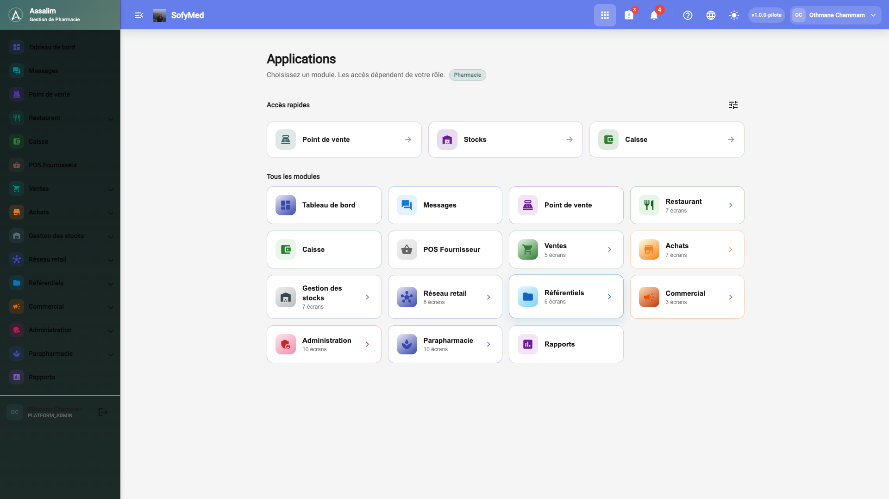
1.1 Fonctionnalités principales
| Module | Description |
|---|---|
| Hub | Centre d'applications : tuiles d'accès rapide aux modules (ventes, achats, stock, etc.) selon vos droits |
| Tableau de bord | Vue synthétique des KPI (chiffre d'affaires, marges, top produits, ventes du jour) |
| Point de Vente (POS) | Caisse tactile unique (vente et achat) : tuiles, ticket, pavé Encaisser, paiement mixte, scanner code-barres / GS1, affiche client, verrou PIN |
| Vente | Cycle complet : devis → commande → bon de livraison → facture → paiement |
| Achat | Cycle complet : proposition → commande → réception → facture fournisseur → paiement |
| Stocks & Inventaire | Suivi en temps réel, sites / dépôts, transferts, inventaires physiques, alertes de rupture |
| Caisse | Ouverture/fermeture de caisse, mouvements d'espèces, rapport de clôture |
| Rapports | Rapports de vente, achat, marge, stocks, exports CSV / Excel / PDF |
| HoReCa | Plan de salle, commandes par table, écran cuisine (KDS), réservations, statistiques, appel serveur QR, board livraisons (téléphone / Glovo / Uber) |
| App mobile | Vue manager sur téléphone (/m) : CA du jour, caisse, alertes, raccourcis — PWA ou APK Android |
| Messagerie | Messagerie interne entre les utilisateurs de votre établissement |
| Paramètres | Configuration de la société, utilisateurs, rôles, permissions, licence, backup base de données |
1.2 Rôles et profils utilisateurs
Assalim gère plusieurs niveaux d'accès. Un administrateur peut attribuer un rôle à chaque utilisateur selon ses responsabilités.
| Rôle | Description | Accès type |
|---|---|---|
| Administrateur | Accès complet à toutes les fonctionnalités et paramètres | Tout |
| Gérant | Supervision des ventes, achats, rapports et stocks | Vente, Achat, Stock, Rapports |
| Pharmacien / Vendeur | Opérations de vente, consultation des stocks | POS, Vente, Stock (lecture) |
| Caissier | Encaissements et opérations de caisse | POS, Caisse |
| Cuisine (KDS) | Consultation et mise à jour des commandes en cuisine | Écran cuisine uniquement |
| Admin. plateforme | Rôle technique SaaS : configuration globale (ex. messagerie système), sans accès métier par défaut | Paramètres d'instance, pas le parcours vente/achat classique |
Connexion & Navigation
Comment accéder à l'application et s'y repérer
Captures pour la documentation : pour éviter la fenêtre de visite guidée (tableau de bord, POS), ouvrez l'application avec ?noTour=1 dans l'URL au moins une fois par session navigateur. Le script Playwright du dossier docs/scripts utilise un viewport 1920×1080, ajoute noTour=1, et pour les écrans POS recharge la première transaction de l’historique récent (il faut au moins une facture vente / achat selon l’écran, selon le type de document courant du POS).
2.1 Se connecter
Ouvrez votre navigateur web (Chrome, Firefox, Edge…) et saisissez l'adresse de votre instance Assalim (fournie par votre administrateur). La page de connexion s'affiche automatiquement.
Saisir vos identifiants
Entrez votre adresse e-mail et votre mot de passe dans les champs correspondants.
Cliquer sur "Se connecter"
Appuyez sur le bouton ou utilisez la touche Entrée de votre clavier.
Accès à l'application
Si vos identifiants sont corrects, vous êtes redirigé vers l'accueil (grille du Hub) ou vers la première page autorisée par votre profil. Le tableau de bord reste accessible depuis le Hub ou le menu latéral. Le menu de navigation latéral se présente par défaut replié après la connexion (ou l'inscription) : utilisez le bouton menu (menu / menu_open) dans la barre du haut pour l'afficher ou le masquer ; votre choix est mémorisé sur cet appareil.
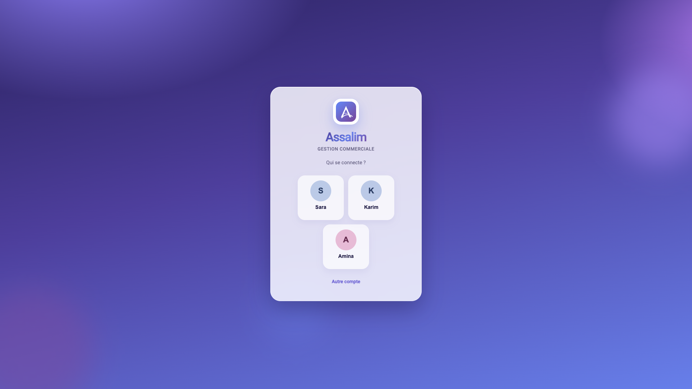
Sur un poste déjà utilisé, la page peut afficher les profils mémorisés (initiales et prénom). Touchez un visage : si un PIN caisse est défini pour ce compte, un pavé numérique s’ouvre ; sinon saisissez le mot de passe. Autre compte ramène au formulaire e-mail / mot de passe.
2.2 Mot de passe oublié
Si vous avez oublié votre mot de passe, cliquez sur le lien "Mot de passe oublié ?" en bas du formulaire de connexion.
Saisir votre adresse e-mail
Entrez l'e-mail associé à votre compte Assalim.
Recevoir le code OTP
Un code de vérification à usage unique (OTP) vous est envoyé par e-mail.
Saisir le code OTP
Entrez le code reçu sur la page de vérification.
Définir un nouveau mot de passe
Choisissez un nouveau mot de passe sécurisé et confirmez-le.
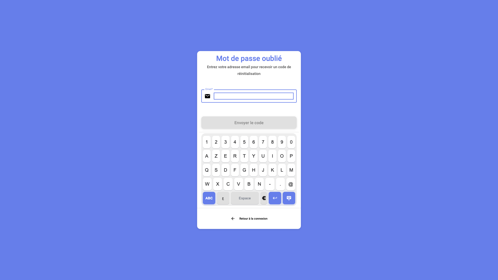
2.3 Interface générale
L'interface d'Assalim combine une barre de navigation latérale (menu, à gauche en français — à droite en arabe RTL), une barre d'outils supérieure et une zone de contenu principale.
Éléments de l'interface
- Menu latéral : accès aux modules (regroupés par thèmes : ventes, achats, données de base, etc.). Il peut être masqué ou affiché via le bouton dédié dans la barre d'outils ; à l'issue d'une connexion ou d'un changement d'utilisateur, il est masqué par défaut pour laisser plus de place au contenu.
- Barre d'outils (en-tête) : logo ou nom de l'établissement, puis à droite : icône applications (retour au Hub), centre de notifications / alertes (cloche), menu Aide (visite guidée, navigation rapide, manuel d'utilisation intégré), icône soleil ou lune (choix du thème clair, sombre ou automatique), langue (FR / EN / AR), changement d'utilisateur, menu compte (mot de passe, paramètres, mode kiosque, modes verrouillés, déconnexion). Sur un petit écran, plusieurs de ces actions sont regroupées sous le menu Plus (more_vert).
- Bannières : selon votre déploiement, des bandeaux peuvent s'afficher (essai, licence à activer, licence expirée, mode hors ligne)
- Bandeau de contexte documentaire : lorsque vous consultez un document vente ou achat, une barre colorée rappelle le flux (vente / achat), le type de document et des actions rapides
- Zone de contenu : affiche la page ou le module sélectionné
- Pied du menu latéral : rappel de l'utilisateur connecté et bouton de déconnexion
2.4 Hub (centre d'applications)
Le Hub est la grille d'accueil : des tuiles colorées représentent les familles de fonctionnalités (ventes, achats, stock, rapports, etc.). Cliquez sur une tuile parent pour afficher les sous-modules, ou sur une tuile simple pour ouvrir directement une page (ex. tableau de bord, caisse).
L'icône applications (apps) dans la barre d'outils ramène toujours au Hub. Les tuiles affichées dépendent de vos droits et, pour le stock, du paramètre Désactiver la gestion de stock de l'établissement.
En haut du Hub, une bande d'actions rapides (caisse, POS, alertes…) dépend du type d'établissement.
Un bandeau « Ouvrir l'app manager » mène à la vue téléphone /m (chapitre 16).

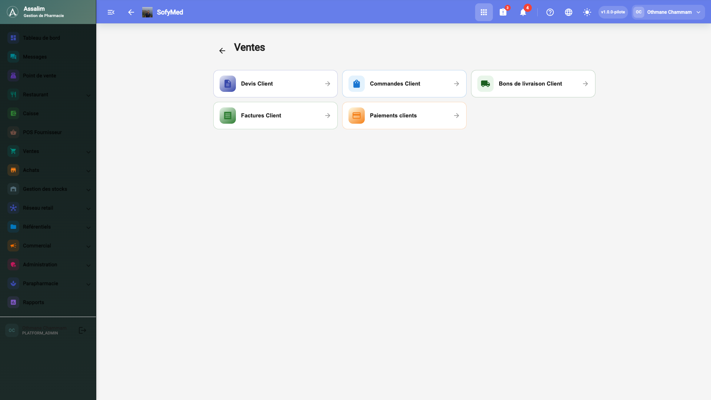
2.5 Thème d'affichage (clair ou sombre)
Vous pouvez adapter l'application à votre confort visuel ou à la luminosité du local. Cliquez sur l'icône soleil ou lune dans la barre d'outils (ou ouvrez le menu Plus sur téléphone ou tablette, puis la rubrique du thème).
- Clair : fond clair, texte foncé.
- Sombre : fond sombre, texte clair.
- Système : Assalim suit le réglage jour / nuit de votre navigateur ou de votre appareil ; si vous changez le thème Windows ou macOS, l'application peut suivre automatiquement.
Votre choix est enregistré sur cet appareil : en vous reconnectant depuis le même navigateur, le thème revient comme vous l'aviez laissé.
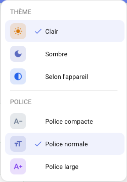
2.6 Menu Aide : visite guidée, navigation rapide, manuel
Le bouton Aide (point d'interrogation) ouvre un menu avec trois entrées utiles au quotidien :
- Découvrir l'interface : courte visite guidée des écrans principaux (tableau de bord, POS, etc.). Vous pouvez la quitter à tout moment.
- Navigation rapide (Ctrl+K) : boîte de dialogue pour aller vite vers un module en tapant quelques lettres.
- Manuel d'utilisation : ouvre ce guide dans l'application, pratique pour consulter une procédure sans quitter votre session. Le manuel suit la langue de l'interface (français ou arabe). Le bouton Exporter en PDF enregistre le guide dans cette même langue : dans la fenêtre d'impression, choisissez « Enregistrer au format PDF ».
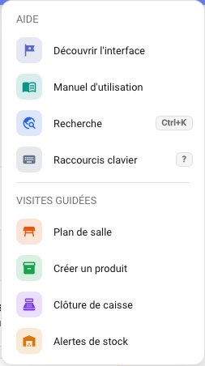
2.7 Recherche universelle (Ctrl+K)
Appuyez sur Ctrl+K (ou ⌘K sur Mac) depuis n'importe quelle page pour ouvrir la palette de recherche. Saisissez quelques lettres pour trouver instantanément :
- Un produit par nom ou code-barres
- Un client ou fournisseur
- Une facture par numéro
- Un module de l'application
Naviguez avec les touches ↑ ↓, validez avec Entrée, fermez avec Échap.
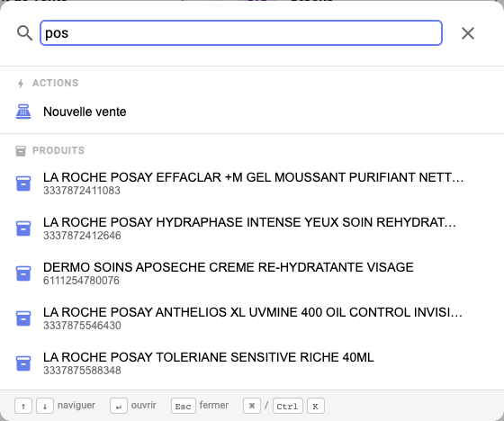
2.8 Raccourcis clavier
Appuyez sur ? depuis n'importe quelle page (hors champ de saisie) pour afficher la liste des raccourcis disponibles. Vous pouvez aussi y accéder via Menu Aide → Raccourcis clavier (?).
| Raccourci | Action |
|---|---|
| Ctrl+K | Ouvrir la recherche universelle |
| ? | Panneau des raccourcis clavier |
| Échap | Quitter le mode kiosk / fermer les dialogues |
| F1 | Aide contextuelle du POS |
| Ctrl+Entrée | Valider un formulaire |
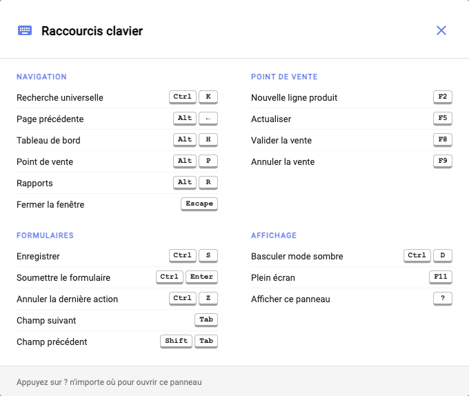
2.9 Typographie paramétrable
Vous pouvez ajuster la taille du texte depuis le menu Thème (icône palette en haut à droite). Trois niveaux sont disponibles :
- Compact : texte plus petit, plus d'informations à l'écran — idéal sur grandes tables et monitors.
- Normal : taille standard recommandée.
- Large : texte plus grand — idéal pour l'accessibilité ou les écrans distants.
Le choix est sauvegardé automatiquement et s'applique sur toute l'application.

2.10 Modes verrouillés (caissier / serveur)
En plus du mode kiosque (plein écran, sortie libre — voir §6.4), le menu compte (icône 👤) propose deux modes verrouillés destinés au personnel en salle ou en caisse. La sortie demande le mot de passe d'un gérant (sauf si un administrateur, gérant ou pharmacien est déjà connecté).
| Mode | Écrans autorisés | Sortie |
|---|---|---|
| Mode caissier verrouillé | POS et caisse uniquement (pas de menu latéral) | Échap ou bouton de sortie → mot de passe gérant |
| Mode serveur verrouillé | Plan de salle, tables, comptoir (cloche notifications visible) | Idem |
| Mode kiosque | Plein écran libre | Sans PIN |
Une déconnexion lève aussi le verrou. Ces modes évitent qu'un caissier ou un serveur n'ouvre les paramètres, les rapports ou d'autres modules pendant le service.
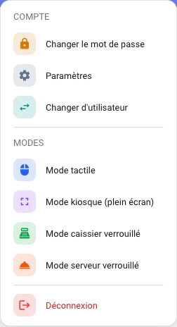
2.11 Mode tactile
Le mode tactile agrandit les boutons, les lignes de tableau et les champs (cibles d’environ 48 px) sur toute l’application — listes, factures, stock, menu — pas seulement la caisse. Il est activé par défaut sur chaque poste (caisse, tablette ou bureau).
- Le clavier et les pavés numériques (login PIN, OTP, caisse, clôture, quantités) ont le même style partout : touches claires, cibles 48 px, actions en couleur primaire.
- Menu compte (icône 👤) → Quitter le mode tactile pour un affichage compact à la souris, uniquement sur ce poste.
- Même menu → Mode tactile pour le réactiver.
Tableau de Bord
Vue d'ensemble de vos indicateurs clés de performance
Après la connexion, vous arrivez en général sur le Hub (voir chapitre 2). Le tableau de bord s'ouvre depuis une tuile du Hub ou depuis le menu latéral. Il offre une vue synthétique et immédiate de l'état de votre activité commerciale.
Vue après défilement : bas du tableau de bord (même page qu’à la figure du chapitre 2 « Interface générale »), pour montrer graphiques et blocs situés sous la première hauteur d’écran. La capture est produite en viewport 1920×1080 après défilement automatique lors de la génération des images.
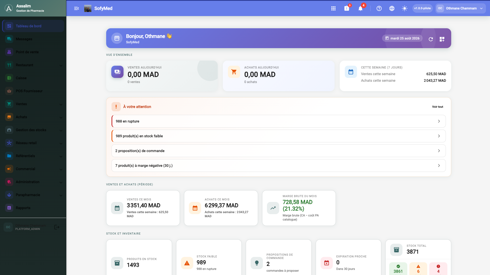
Indicateurs affichés
| Indicateur | Description |
|---|---|
| Chiffre d'affaires du jour | Total des ventes encaissées aujourd'hui |
| Ventes du mois | Cumul des ventes sur le mois en cours |
| Marge brute | Différence entre le chiffre d'affaires et le coût des achats |
| Clients actifs | Nombre de clients ayant réalisé des achats récents |
| Top produits | Les produits les plus vendus sur la période |
| Ventes par catégorie | Répartition du CA par famille de produits (graphique) |
| Évolution des ventes | Graphique d'évolution journalière ou mensuelle |
| Avances récentes | Liste des derniers acomptes reçus |
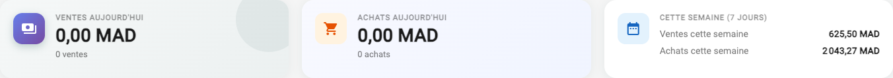
3.1 Dashboard personnalisable
Vous pouvez choisir quels widgets afficher sur le tableau de bord en cliquant sur l'icône Personnaliser (🔧) à côté du bouton Actualiser.
Un panneau s'ouvre avec la liste de tous les widgets disponibles :
- KPIs — ventes/achats du jour, marge mensuelle
- Session de caisse — état de la caisse ouverte
- Ventes journalières — graphique en courbes sur 30 jours
- Ventes par catégorie — graphique en secteurs (camembert)
- Top produits — palmarès des produits les plus vendus
- Ventes vs Achats — comparaison mensuelle
- Alertes stock — produits en rupture ou faible stock
- Propositions d'achat — compteur de réapprovisionnements à valider
Cochez/décochez librement. Cliquez Réinitialiser pour retrouver la configuration par défaut. Vos préférences sont sauvegardées automatiquement.
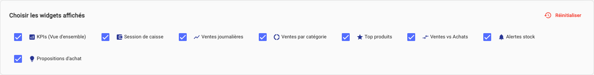
3.2 Plan d'action « Quoi faire demain »
Sous les indicateurs du jour, le tableau de bord affiche une liste classée « Quoi faire demain » lorsque des points d'attention existent. Chaque ligne ouvre l'écran utile (caisse, stock, périmés, créances, etc.).
Ordre de priorité typique :
- Caisse fermée
- Rupture de stock
- Péremption dans les 7 jours
- Créances de plus de 30 jours
- Stock faible
- Produits à marge négative
- Propositions d'achat à traiter
/m, chapitre 16) reprend exactement ce plan d'action.
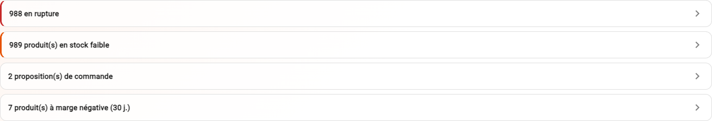
Référentiel Produits
Gestion des produits, catégories et unités de mesure
4.1 Produits
La section Produits vous permet de gérer l'ensemble de votre catalogue : créer, modifier, rechercher et supprimer des articles.
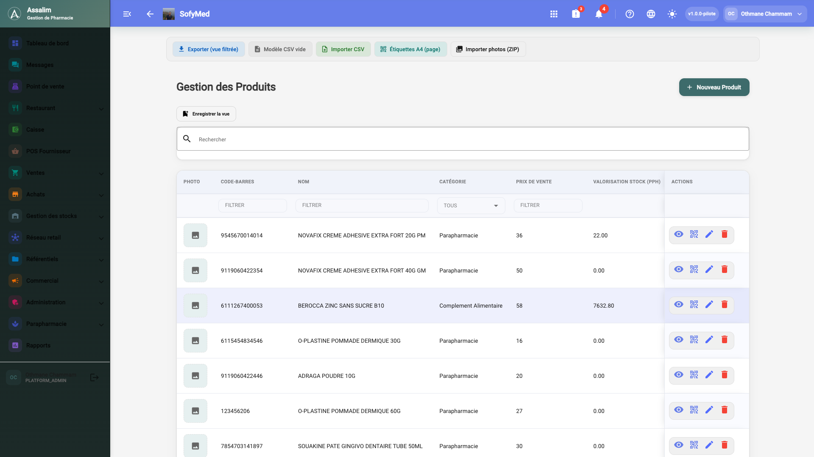
Créer un nouveau produit
Ouvrir le formulaire
Cliquez sur le bouton "+ Nouveau produit" en haut de la liste.
Renseigner les informations
Saisissez le nom, le code-barres (ou laissez générer automatiquement), la catégorie, l'unité, les prix d'achat et de vente, et le stock minimum.
Ajouter une image (optionnel)
Importez une photo du produit pour faciliter son identification en POS.
Enregistrer
Cliquez sur "Enregistrer". Le produit apparaît immédiatement dans la liste.
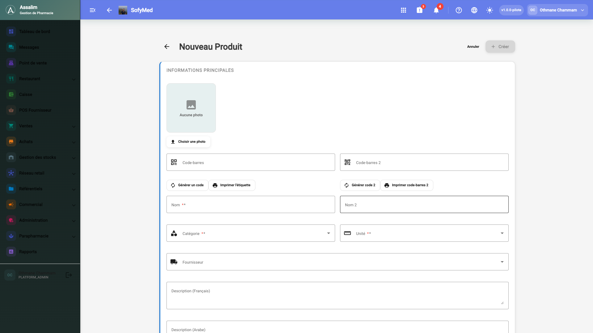
Champs du produit
| Champ | Description | Requis |
|---|---|---|
| Nom | Désignation commerciale du produit | ✅ |
| Référence / Code-barres | Code unique d'identification (EAN, QR…) | — |
| Catégorie | Famille de produits | ✅ |
| Unité | Unité de vente (pièce, kg, litre…) | ✅ |
| Prix d'achat (HT) | Coût d'achat auprès du fournisseur | ✅ |
| Prix de vente (TTC) | Prix affiché au client | ✅ |
| Bloquer remise | Interdit la remise ligne en vente (%, montant, prix forcé). La remise globale du ticket reste possible. Désactivé par défaut. | — |
| Bloquer retour | Interdit le retour vente (quantités retournées sur le ticket ou avoir). Les retours achat restent possibles. Désactivé par défaut. | — |
| Bloquer modification de prix | Interdit de modifier le prix de vente catalogue depuis la caisse (⋯ Modifier le prix). La fiche produit reste modifiable. Désactivé par défaut. | — |
| TVA | Taux de taxe applicable | — |
| Stock minimum | Seuil d'alerte en cas de rupture imminente | — |
| Date de péremption | Gestion des produits périssables | — |
| Description | Notes internes ou description détaillée | — |
Imprimer des étiquettes
Depuis la liste des produits : bouton Étiquettes A4 (page) (une étiquette 50×30 mm par unité de stock vendable de la page, stock 0 ignoré), bouton Codes-barres A4 (tous) (liste filtrée, deux codes par ligne, pastille 92×65 mm, photo si disponible) et, sur chaque ligne, l’icône étiquette pour un rouleau unitaire. Depuis la fiche produit : imprimer le code-barres principal ou secondaire. L’affichage du prix sur l’étiquette se règle dans les paramètres généraux (« Prix sur les étiquettes »).
Suppléments / options cuisine (HoReCa)
Sur la fiche produit (sans passer par Modifier), la carte Suppléments / options cuisine permet d’ajouter des extras (fromage, double viande, cuisson…) avec un éventuel supplément de prix. Ces options apparaissent ensuite à la caisse table ou comptoir. Réservé aux profils qui administrent le plan de salle (gérant, admin).
4.2 Catégories
Les catégories permettent d'organiser votre catalogue en familles logiques (ex. : Médicaments, Cosmétiques, Hygiène, Compléments alimentaires…).
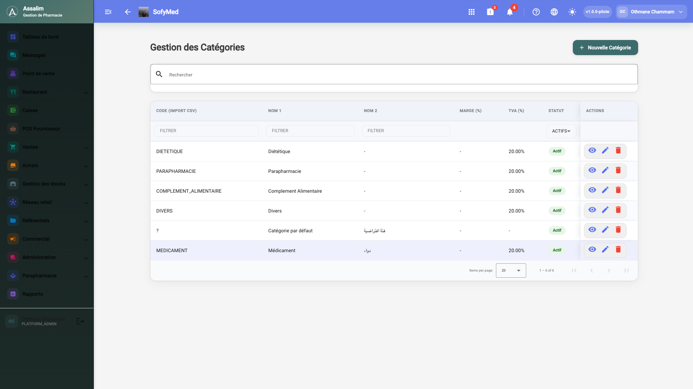
Pour créer une catégorie, cliquez sur "+ Nouvelle catégorie", saisissez le nom et validez. Vous pouvez également modifier ou supprimer une catégorie existante via les icônes d'action à droite de chaque ligne.
4.3 Unités de mesure
Définissez toutes les unités utilisées dans votre activité : pièce, boîte, gramme, litre, etc. Ces unités sont sélectionnées lors de la création de chaque produit.
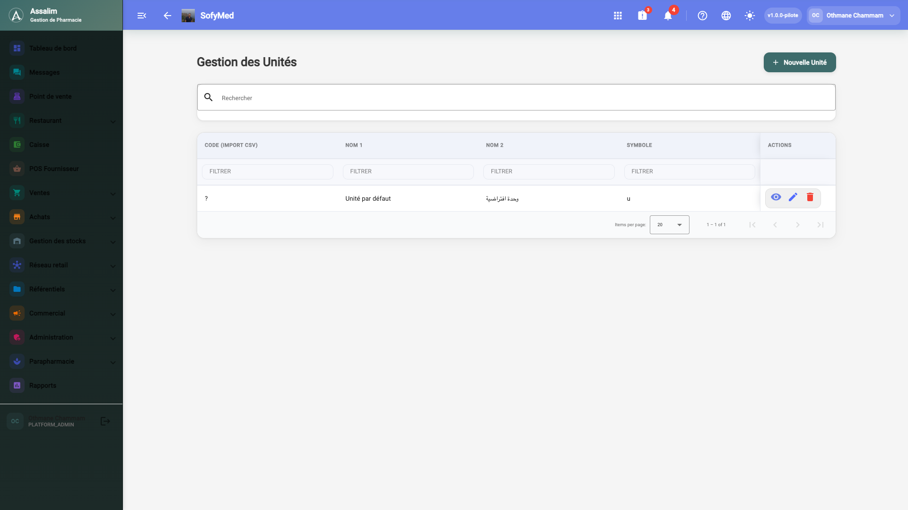
Clients & Fournisseurs
Gestion de votre carnet d'adresses commercial
5.1 Gestion des clients
La section Clients centralise toutes les informations sur vos acheteurs : coordonnées, historique des achats, solde et avances.
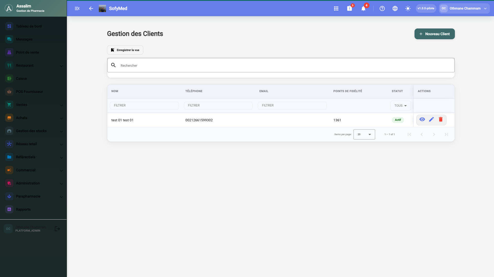
Créer un client
Cliquez sur "+ Nouveau client" et remplissez les informations suivantes :
- Nom / Raison sociale (obligatoire)
- Téléphone et adresse e-mail
- Adresse postale
- Condition de paiement par défaut
- Plafond de crédit (0 = crédit non autorisé ; vide = pas de plafond)
- Notes internes
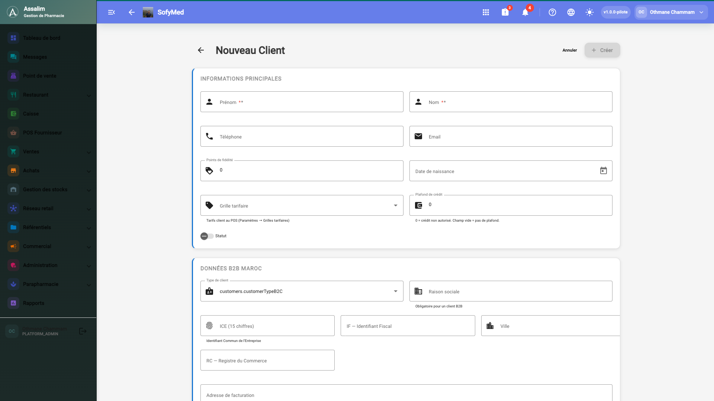
Fiche client — détail
En cliquant sur un client dans la liste, vous accédez à sa fiche détaillée, qui affiche :
- Ses coordonnées complètes
- Son historique de commandes et factures
- Ses paiements effectués et son solde en cours
- Ses avances et acomptes
5.2 Gestion des fournisseurs
La section Fournisseurs fonctionne de manière identique à celle des clients, mais orientée vers vos partenaires d'approvisionnement.
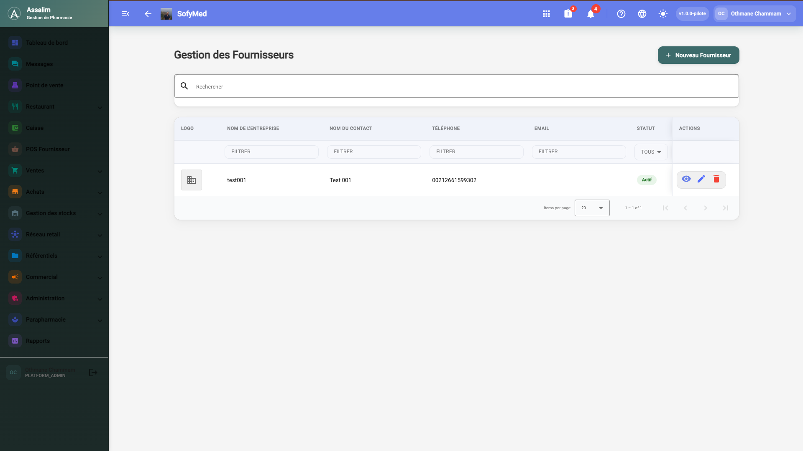
Les informations spécifiques à un fournisseur incluent :
- Nom commercial et raison sociale
- ICE, numéro de registre de commerce (Maroc)
- Contacts (téléphone, e-mail)
- Historique des achats et factures fournisseur
- Solde dû et historique de paiements
5.3 Conditions de paiement
Définissez les conditions de paiement standards de votre commerce (comptant, 30 jours, 60 jours net, etc.) et associez-les à vos clients et fournisseurs.
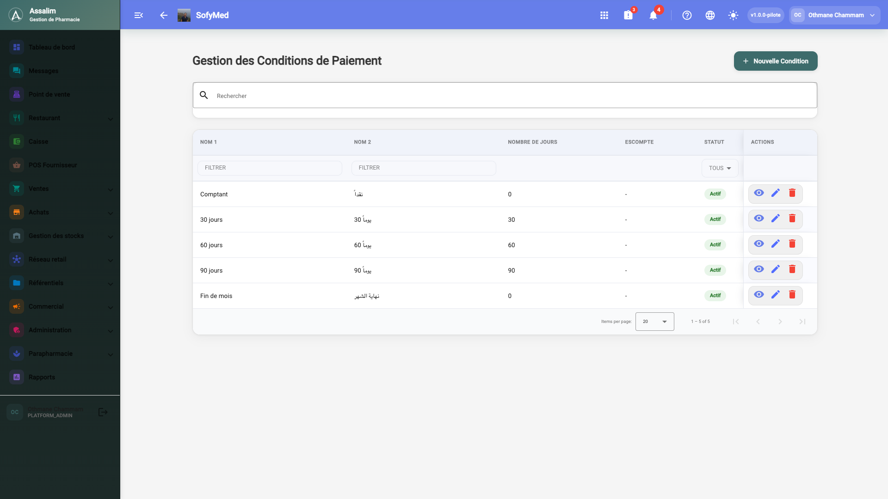
Point de Vente (POS)
Caisse rapide pour la vente et l'achat
6.1 POS Vente
Ouvrez Point de vente (/pos). La caisse s’ouvre sans le menu latéral ERP
(tableau de bord masqué) : catégories (nom + second nom s’il est renseigné, comme les tuiles) et tuiles produit à gauche,
ticket et pavé (reçu, quantité, remise) à droite. Dans Paramètres → Options de l'écran caisse (§15.9), vous pouvez masquer le catalogue (catégories et tuiles) : il reste le scan code-barres et la recherche, calés sur la largeur du ticket ; dès deux caractères, une liste temporaire permet de choisir le produit, puis le ticket occupe toute la largeur à gauche (colonnes alignées, boutons d’action visibles). Sans article, le ticket ne montre que le chip client (ou fournisseur en POS achat) et le pavé sert de calculatrice (+ − × ÷ =) ; dès qu’un produit est ajouté, le pavé redevient Reçu / Qté / Remise. Le bouton Calculatrice du bandeau (et du menu ⋮) ouvre une modale (pavé + − × ÷ =) sans masquer Encaisser ; fermez-la par la croix, le fond ou Échap. Le bouton
Menu ERP réaffiche la barre et la sidenav. Sur téléphone ou tablette portrait, le ticket
s’ouvre en feuille depuis la barre Ticket. L’historique (F8) est dans le bandeau du haut
(pas dans l’en-tête du ticket). Un produit en rupture (stock vendable 0) peut être ajouté :
une pastille « Rupture » s’affiche ; à l’encaissement, un dialogue demande de valider quand même.
Le clavier tactile s’ouvre via l’icône clavier, pas au simple focus.
Le bandeau propose aussi Actualiser, Calculatrice, Verrouiller la caisse (§6.11),
restaurer le dernier ticket (F9) et vider le panier (F10) — pas de second bouton « vider » sur l’en-tête du ticket.
Chaque ajout au ticket est enregistré tout de suite dans le navigateur : après un F5, le bouton
Restaurer la dernière facture reste dans le bandeau (le ticket s’affiche vide tant que vous ne restaurez pas).
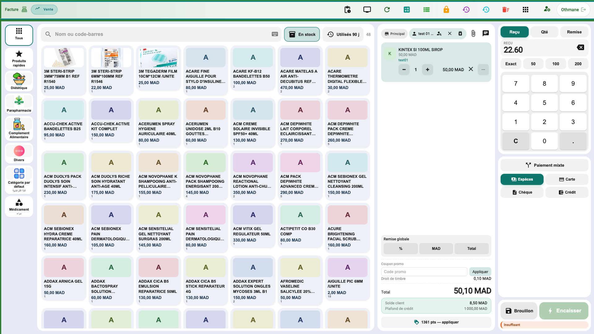
Effectuer une vente
Sélectionner ou scanner les produits
Touchez une tuile, ou scannez le code-barres (pistolet USB : pas besoin de toucher l’écran). Un code EAN collé dans la recherche est ajouté tout seul ; le champ se vide et le curseur y revient. Un seul X efface la recherche (pas le X du navigateur). Sur téléphone ou tablette, le bouton Scanner (icône appareil photo) ouvre la caméra — il est masqué sur une caisse 15–24″ (pistolet USB) et ne pilote pas le pistolet. Filtrez par catégorie ou favoris. Le filtre En stock est déjà actif à l’ouverture (§6.9) : les ruptures n’apparaissent pas dans les tuiles (le scan reste possible). Le bouton Utilisés 90 j (éteint par défaut) ne garde que les produits vendus au moins une fois sur les 90 derniers jours — tout le catalogue paginé, pas seulement les 12 produits rapides.
Ajuster les quantités
Sur le ticket, le nom occupe toute la largeur à côté de la vignette. En dessous : − / qté / +, le total, la croix puis ⋯, alignés d’une ligne à l’autre. Si le catalogue est masqué (§15.9), la barre de recherche s’aligne sur le ticket ; chaque ligne aligne les colonnes (prix, quantité, total) et affiche les boutons remise, retour, note et prix (le menu ⋯ reste en mode catalogue). Ou le pavé Qté. Toucher une ligne affiche son panneau remise et/ou retour (s’il y en a) et masque ceux des autres produits. Retoucher la ligne déjà sélectionnée la désélectionne. Remise, retour et options cuisine : ⋯ (mode catalogue) ou les boutons de la ligne (catalogue masqué) — menu du même style que Langue / Thème (§6.3).
Sélectionner un client (optionnel)
Le chip Client est toujours visible sur le ticket. Recherchez et associez un client : le solde, le plafond et la fidélité n’apparaissent qu’à ce moment-là (§6.10).
Encaisser
Choisissez le moyen (Espèces, Carte, Chèque, Crédit) sur le pavé, saisissez le reçu (ou Exact), puis Encaisser. Si les pourboires sont activés (§15.1), une ligne Pourboire apparaît en bas du bloc paiement (sous les moyens ou le mixte) : touchez-la et saisissez un montant MAD au pavé. Choisissez Espèces (tiroir) ou Inclus carte (le TPE prend facture + pourboire). Le montant et le mode sont conservés dans le brouillon (F5 / Restaurer) et enregistrés sur la facture. Le total facture ne change pas. Pour plusieurs moyens sur la même vente, utilisez Paiement mixte : toucher une ligne la sélectionne et le pavé Reçu en saisit le montant ; + Espèces / + Carte / + Chèque / + Crédit ajoute une part. Le crédit est le reliquat sur le compte client (pas un encaissement) : un client est obligatoire. Un droit de timbre peut s’ajouter selon les taux du §15.1 (hors CA, comme le pourboire). Encaisser + ticket imprime en même temps si l’option est visible.
Imprimer ou envoyer le reçu
Si une imprimante ticket réseau est renseignée sur le poste de caisse (hôte, port 9100), le ticket part en ESC/POS ; sinon l’aperçu navigateur. Un encaissement espèces peut ouvrir le tiroir si l’option est cochée. Un reçu peut aussi être envoyé par e-mail.
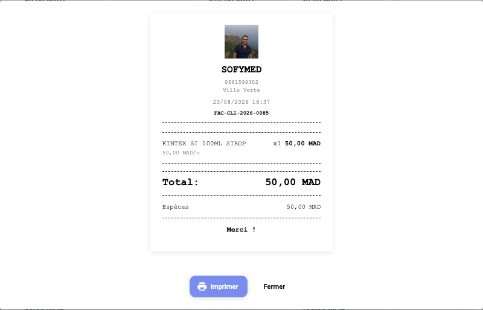
6.2 POS Achat
Le POS Achat (/purchase-pos ou menu POS Fournisseur)
est le même écran tactile que la vente, avec un badge Achat
et le chip fournisseur. Il enregistre une réception et met les stocks à jour.
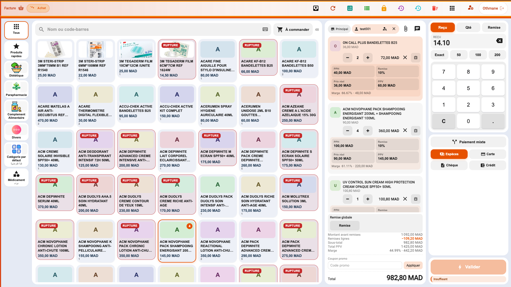
Sélectionner le fournisseur
Le chip Fournisseur est toujours visible. Recherchez et sélectionnez le fournisseur : son solde s’affiche s’il est renseigné. Pas de fidélité ni de tarifs commerciaux à l’achat.
Scanner ou ajouter les produits reçus
Scannez chaque article ou sélectionnez-le dans la liste et saisissez la quantité reçue. Le bouton À commander (équivalent d’« En stock » en vente) est éteint par défaut : activez-le pour n’afficher que les ruptures et sous-seuils.
Vérifier les prix d'achat
Confirmez ou ajustez le prix d'achat de chaque article. L'historique de prix est conservé.
Valider la réception
Touchez Encaisser (ou l’équivalent Valider). Les stocks sont mis à jour immédiatement.
6.3 Remises, marge et conversion au POS
Les paragraphes ci-dessous complètent le POS Vente et le POS Achat lorsque vous transformez un document existant (devis, commande, bon de livraison / bon de réception, etc.) en un autre document depuis l'écran caisse, ou lorsque vous ajustez les prix au moment de l'encaissement.
Remise sur une ligne (POS Vente)
- Toucher une ligne du ticket ouvre son panneau remise (si une remise est posée) et/ou retour, et masque les panneaux des autres produits. Retoucher la ligne déjà sélectionnée la désélectionne (panneaux fermés).
- Si votre rôle peut modifier les produits (administrateur, pharmacien, gérant), ⋯ propose aussi Modifier le prix : un écran dédié enregistre le prix de vente catalogue du produit (pas seulement une remise sur le ticket). Si le produit a Bloquer modification de prix, l’entrée reste visible mais barrée et grisée.
- Sur le ticket, touchez ⋯ sur la ligne puis Remise (ou le mode Remise du pavé) : pourcentage, montant ou prix forcé. Si le catalogue est masqué (§15.9), le bouton Remise est déjà sur la ligne. Si le produit a Bloquer remise, l’entrée Remise reste visible mais barrée et grisée ; la remise globale du ticket reste possible.
- De même, ⋯ → Retour (ou le bouton Retour sur la ligne, catalogue masqué) saisit les quantités vendable / abîmé / périmé. Si le produit a Bloquer retour, l’entrée Retour reste visible mais barrée et grisée ; les retours achat restent possibles.
- En mode pourcentage, le point du pavé saisit les décimales du taux (ex. 10,5 %). Le montant de ligne reste exact (14,50 − 10 % = 13,05). Seuls les totaux ticket (sous-total, dû, timbre, reçu, rendu) sont arrondis au pas des pièces (§15.1) : 13,05 → 13,10 si pas 0,10.
- Le prix d'achat (PPH) de référence s’affiche s’il est renseigné : ne descendez pas trop bas.
- Si le prix de vente effectif passe sous le PPH, une pastille sous PPH apparaît sur la ligne.
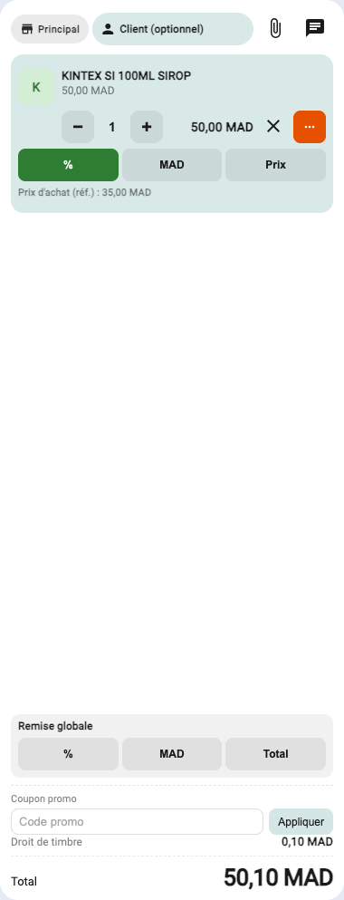
Conversion vers un autre document (quantité source)
Lorsque le POS est ouvert en mode conversion (par exemple devis → commande, commande → facture, bon de livraison → facture, ou équivalents côté achat), chaque ligne issue du document source affiche sous le sélecteur de quantité la mention « Qté source » : il s'agit de la quantité sur le document d'origine. Vous pouvez modifier la quantité sur le nouveau document tout en gardant cette référence visible.
- POS Vente : conversion commande → facture ou bon de livraison ; affichage de la quantité source pour toutes les lignes importées.
- POS Achat : même principe lors du chargement d'un document fournisseur en conversion dans le POS achat.
Commande restaurant / cuisine et facturation (POS Vente)
Si vous utilisez le module Horeca : une ligne de commande marquée annulée en cuisine peut être reprise lors de la conversion en facture depuis le POS. Une pastille indique ce statut ; la quantité à facturer est proposée à 0 (vous pouvez l'augmenter si une facturation partielle est nécessaire). La quantité source sur le document de commande reste affichée comme ci-dessus.
6.4 Mode kiosk (plein écran tablette)
Le mode kiosk masque la sidebar et la barre d'outils pour transformer le POS en application plein écran — idéal sur tablette en caisse ou en libre-service.
Activer
Menu compte (icône 👤) → Mode kiosque. L'écran passe en plein écran, la sidebar disparaît.
Quitter
Appuyez sur Échap ou survolez le coin supérieur droit pour faire apparaître le bouton Quitter le kiosque.
6.5 Mode hors-ligne
Assalim détecte automatiquement la perte de connexion Internet. Lorsque vous êtes hors-ligne :
- Une bannière rouge s'affiche en haut de l'écran.
- Les ventes POS continuent de fonctionner normalement et sont sauvegardées localement.
- Le nombre de ventes en attente de synchronisation est affiché sur la bannière.
- Au retour de la connexion, une bannière orange indique la synchronisation en cours, puis disparaît automatiquement.
6.6 Programme de fidélité au POS
Si le programme de fidélité est activé (Commercial → Fidélité, §14.1), un widget apparaît automatiquement dans le ticket dès qu'un client est sélectionné sur une facture. Ce n’est pas un interrupteur dans les options de l’écran caisse : sans client, rien n’est affiché.
- Affiche les points cumulés et le niveau (Bronze / Argent / Or).
- Affiche la progression vers le niveau suivant.
- Permet de saisir un nombre de points à utiliser → une remise correspondante est appliquée automatiquement.
Les points sont crédités automatiquement après chaque vente validée.
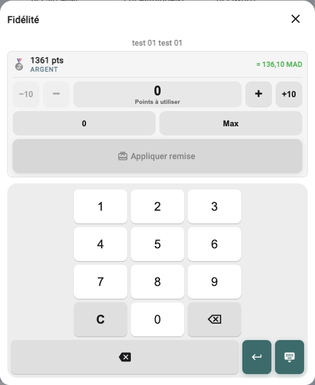
6.7 Scan code-barres et GS1 DataMatrix
Trois façons d’ajouter un article par code :
- Pistolet USB : tape dans la caisse comme un clavier. Un EAN (≥ 6 chiffres) part au panier sans rester coincé dans la recherche ni dans le pavé Reçu.
- Barre de recherche : coller ou scanner un EAN ajoute le produit ; un nom (ex. ZIAJA) filtre le catalogue.
- Bouton Scanner : visible seulement sur téléphone / tablette ; ouvre la caméra, puis le même lookup produit. Absent sur une caisse bureau (pistolet USB).
Le champ accepte un code EAN classique et un DataMatrix GS1 (souvent imprimé sur les cartons et les produits à lots). Le scan extrait automatiquement :
- le GTIN (identifiant produit) pour retrouver l'article ;
- le numéro de lot s'il est présent dans le code ;
- la date limite de consommation (DLC) s'il est présente.
Ces informations sont proposées à l'ajout au panier (sélection de lot / DLC). Un code-barres simple (EAN-13) continue de fonctionner comme avant.
6.8 Affiche client
Sur un second écran (tablette face au client, écran caisse), ouvrez Affiche client
depuis la barre d'actions du POS. Une fenêtre /pos/customer-display affiche en temps réel
le panier, les quantités, le total à payer, les retours et les points de fidélité.
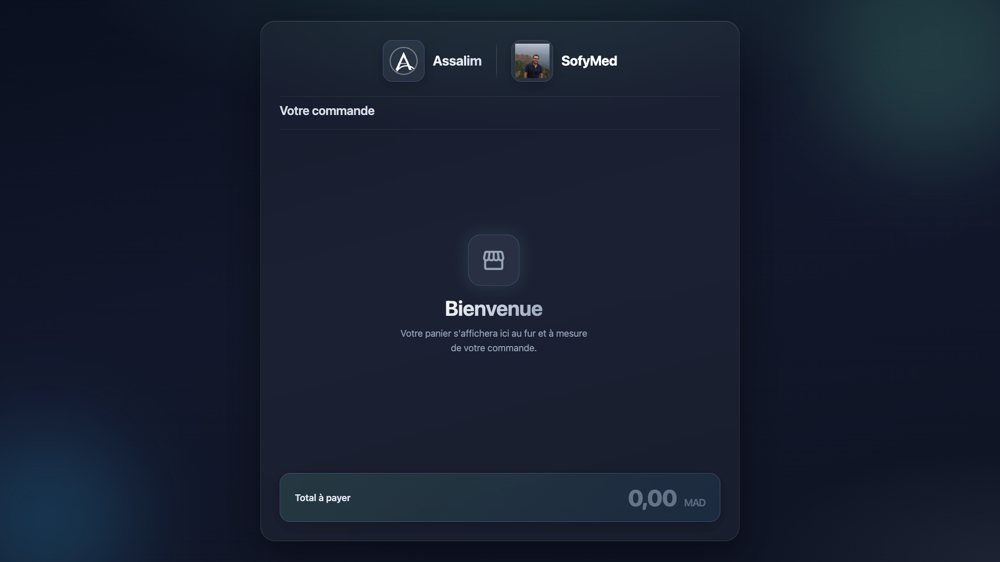
L'affiche se met à jour toute seule tant que le POS reste ouvert sur le poste principal. Un message promotionnel et un QR code (fidélité, avis, menu) peuvent être configurés dans les paramètres.
6.9 Catalogue : filtres En stock et Utilisés
Au-dessus des tuiles catalogue, à côté de la recherche, le bouton En stock n’apparaît que si la gestion de stock est activée (paramètre « Désactiver la gestion de stock » non coché, §15.1). À l’ouverture de la caisse vente, le filtre est déjà actif.
- Activé (défaut vente) : seules les tuiles avec un stock vendable > 0 restent (toutes les catégories, recherche et favoris).
- Désactivé : le catalogue complet revient, y compris les ruptures. Vous pouvez alors ajouter un article à 0. L’encaissement n’est possible que si Autoriser le stock négatif est activé (§15.1) : un dialogue demande confirmation, puis le stock vendable passe sous zéro. Sinon Encaisser reste bloqué.
- Un scan code-barres d’un produit à stock 0 reste possible : le filtre ne concerne que les tuiles (et la liste de recherche si le catalogue est masqué, §15.9).
- En POS Achat, le même emplacement affiche À commander (rupture et sous-seuil), éteint par défaut.
À côté, en POS vente seulement, le bouton Utilisés 90 j (éteint par défaut) limite les tuiles aux produits apparus sur une facture non annulée des 90 derniers jours. Combinable avec En stock, une catégorie ou la recherche. Contrairement à l’onglet Produits rapides (favoris + 12 derniers vendus), ce filtre pagine tout le catalogue concerné. Le scan d’un produit jamais vendu sur la période reste possible.
6.10 Client, solde et tarifs
Sur la caisse tactile, le chip Client (vente) ou Fournisseur (achat) est toujours sur le ticket. Le solde, la fidélité et les tarifs commerciaux ne se règlent pas dans Paramètres → Options de l'écran caisse (§15.9) : ils suivent le contexte.
- Aucun tiers : pas de solde, pas de fidélité.
- Client (vente) : solde et plafond s’il y en a (plafond 0 = crédit non autorisé) ; fidélité si le programme est actif (§6.6).
- Fournisseur (achat) : solde seulement. Pas de fidélité.
- Tarifs commerciaux (prix barré, badges grille / promo) : uniquement en vente, lorsqu’un tarif s’applique vraiment à la ligne.
6.11 Verrouiller la caisse
Ce n’est pas le mode caissier verrouillé du menu compte (§2.10). Ici, la session reste ouverte : un PIN caisse (défini sur l’utilisateur) permet de masquer le ticket pendant une pause.
- Bandeau POS : bouton Verrouiller la caisse (à côté d’Actualiser). Sur écran étroit, l’action est dans le menu ⋮ du bandeau — plus de cadenas dans l’en-tête du ticket.
- Un mur de visages s’affiche (fond flou) : touchez votre profil, saisissez le PIN. Le fond n’est pas refermable d’un tap.
- Sans geste pendant le délai d’inactivité (paramètre « Verrouillage caisse après inactivité », défaut 90 s, 0 = jamais), le même overlay apparaît.
- Recharger la page conserve le verrou jusqu’au PIN. Une déconnexion lève le verrou (pas de mur à la reconnexion, sauf réglage contraire).
Sans PIN caisse, le bouton ne verrouille pas. Distinct du kiosque (plein écran sans mot de passe, §6.4).
Transactions de Vente
Cycle complet de la vente : du devis à la facture
Assalim gère un cycle documentaire complet pour vos ventes. Chaque document peut être converti au suivant d'un simple clic, évitant toute ressaisie.
Vous pouvez commencer à n'importe quelle étape selon votre processus interne.
7.1 Devis de vente
Un devis est une proposition commerciale envoyée au client avant toute commande ferme. Il n'a aucun impact sur les stocks.
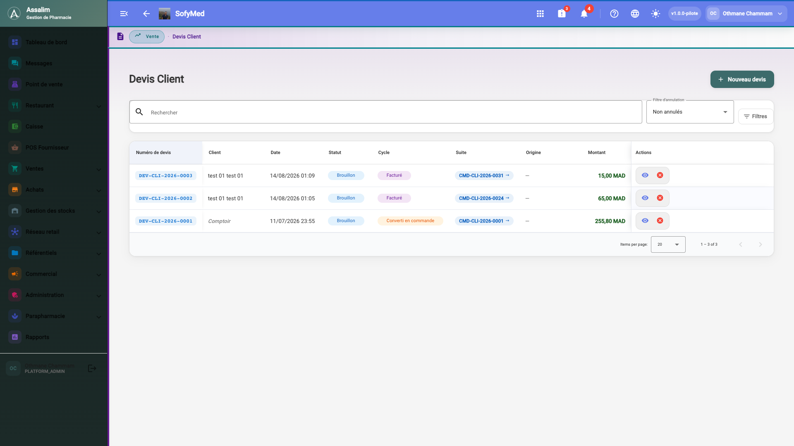
Créer un devis
Nouveau devis
Cliquez sur "+ Nouveau devis" dans la liste des devis.
Sélectionner le client
Choisissez le client dans la liste ou créez-en un nouveau.
Ajouter les lignes
Ajoutez chaque produit avec sa quantité et son prix. Appliquez des remises si nécessaire.
Enregistrer et envoyer
Enregistrez le devis, puis imprimez-le ou envoyez-le par e-mail au client.

7.2 Commandes de vente
Une commande de vente confirme la demande du client. Elle peut être créée directement ou convertie depuis un devis accepté.
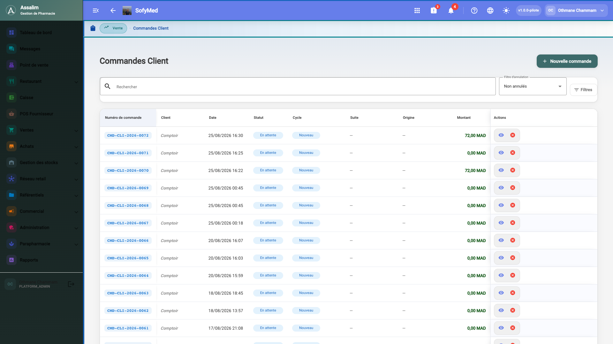
7.3 Bons de livraison
Le bon de livraison (BL) documente la sortie physique des marchandises du stock. Sa validation déclenche la diminution du stock correspondant.
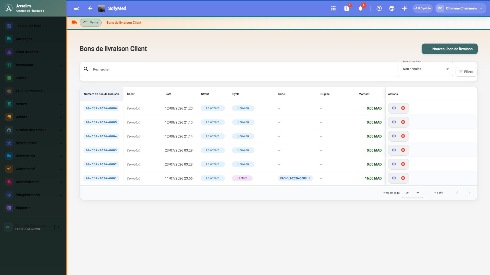
7.4 Factures de vente
La facture de vente est le document comptable officiel remis au client. Elle peut être générée depuis une commande ou un bon de livraison.
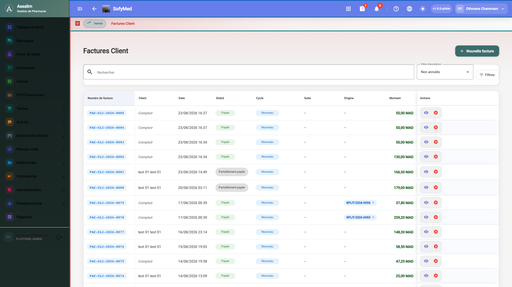
Actions sur une facture
- Imprimer : générer un PDF imprimable
- Envoyer par e-mail : transmettre la facture au client
- Enregistrer un paiement : saisir un règlement partiel ou total
- Joindre un fichier : attacher un document (bon de commande client, etc.)
- Annuler : annuler la facture (avec justification)
7.5 Paiements clients
Gérez les règlements reçus de vos clients : paiements sur facture, avances et acomptes.
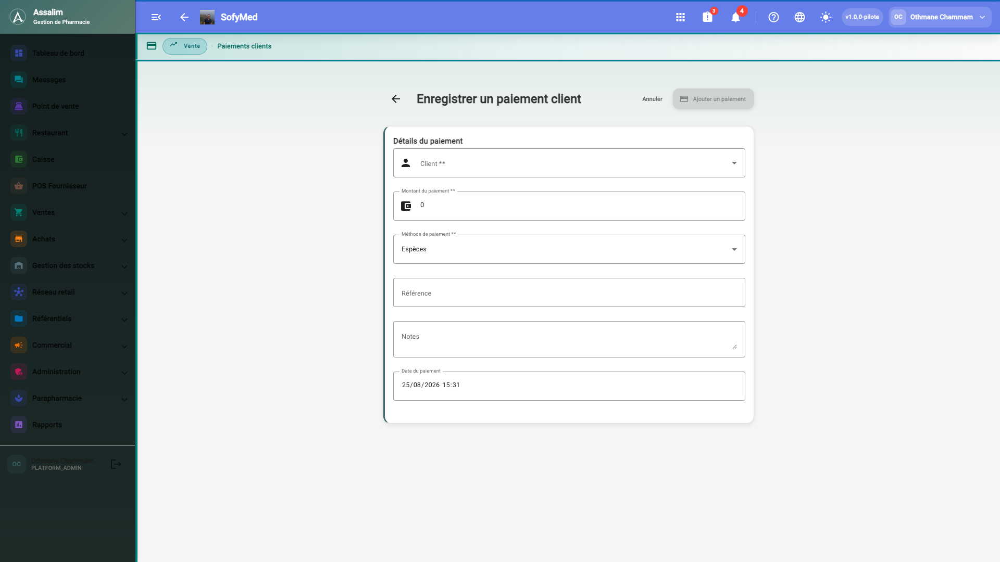
| Mode de paiement | Description |
|---|---|
| Espèces | Règlement en numéraire, impacte la caisse |
| Carte bancaire | Paiement par TPE |
| Chèque | Chèque remis à l'encaissement |
| Virement bancaire | Virement reçu sur le compte |
| Avance | Acompte déduit des prochaines factures |
Un droit de timbre peut s’ajouter sur la part encaissée de chaque mode, selon les taux saisis en §15.1 (ex. 0,25 % sur les espèces au Maroc). Le montant du timbre est arrondi au pas des pièces (0,25 → 0,30 si pas 0,10). Il n’entre pas dans le CA de la facture (comme le pourboire). Il s’affiche sur le paiement, l’avance, le ticket et le rapport de clôture pour la part espèces.
7.6 Discussions et pièces jointes sur un document
Sur la fiche d'un devis, d'une commande, d'un bon de livraison ou d'une facture (et sur d'autres écrans similaires, selon vos droits), vous pouvez trouver deux blocs utiles pour le travail d'équipe :
- Discussion liée au document : fil de messages réservé à cette pièce (différent de la messagerie générale du chapitre 13). Servez-vous-en pour demander une validation interne, prévenir la logistique ou laisser une note visible par les collègues qui ouvrent le même dossier. Au doigt : mêmes cibles et clavier tactile que dans Messages.
- Pièces jointes : ajoutez des fichiers (PDF signé, bon de commande client scanné, photo, etc.) pour tout garder au même endroit que le document comptable.
Si vous ne voyez pas ces zones, votre profil n'a peut-être pas la permission correspondante : demandez à un administrateur.
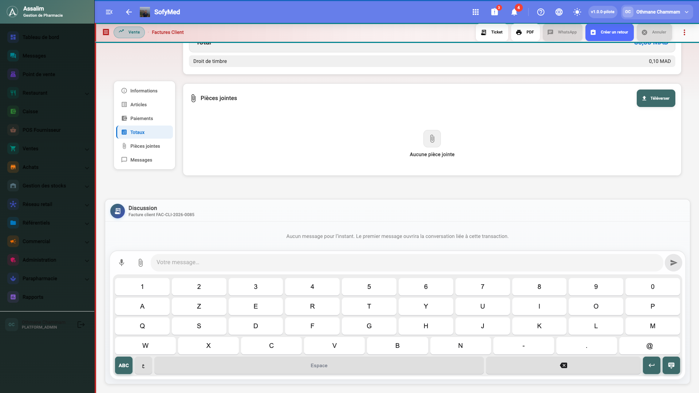
7.7 Retours vente — Avoir client
Lorsqu'un client retourne des marchandises, vous créez un avoir client directement depuis la facture d'origine.
Ouvrir la facture
Allez dans Ventes → Factures, ouvrez la facture concernée.
Créer le retour
Cliquez sur Retour (icône). Une copie de la facture s'ouvre en mode retour.
Indiquer les quantités retournées
Pour chaque ligne, saisissez les quantités retournées et leur état (vendable / abîmé / périmé). Un produit avec Bloquer retour n’est pas ajouté au ticket avoir.
Valider
L'avoir est créé avec le numéro AVOIR-CLI-XXXX. Le stock est réintégré et un PDF est disponible.
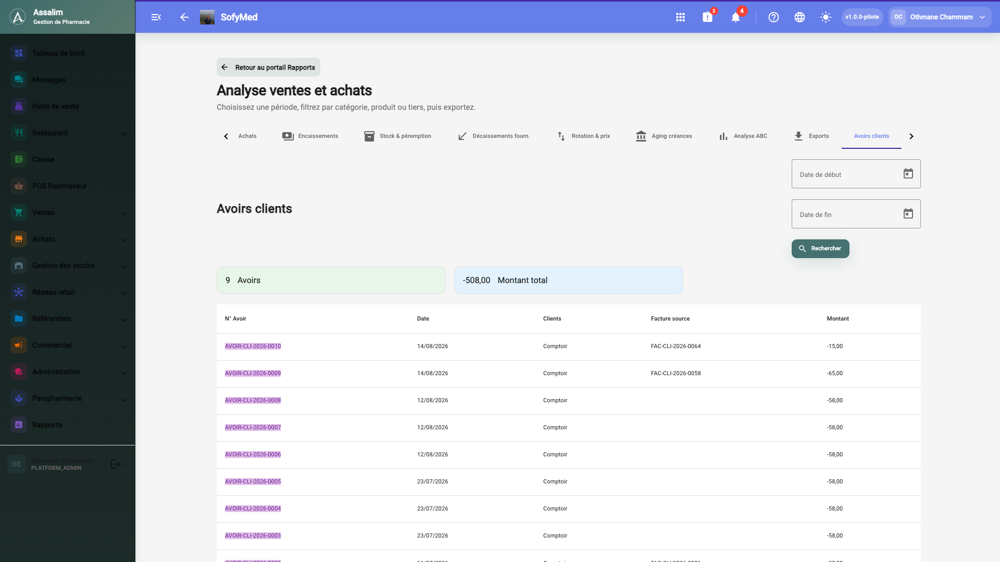
7.8 Partage WhatsApp
Sur la fiche d'une facture (et d'autres documents vente), un bouton WhatsApp ouvre une conversation préremplie (nom, n° de document, montant) vers le téléphone du client. Même principe pour une réservation (date, couverts, table) et une proposition d'achat (lignes + total vers le fournisseur).
Transactions d'Achat
De la proposition automatique au paiement fournisseur, en passant par les devis et commandes
Le module achat couvre l'approvisionnement : propositions automatiques, éventuels devis fournisseur, commandes, réceptions, factures et paiements.
Toutes les étapes ne sont pas obligatoires : vous pouvez saisir directement une commande ou une facture selon votre habitude.
8.1 Propositions d'achat
Les propositions d'achat sont générées automatiquement par le système en analysant les niveaux de stock et les seuils minimaux définis. Elles constituent une aide à la décision pour votre responsable achats.
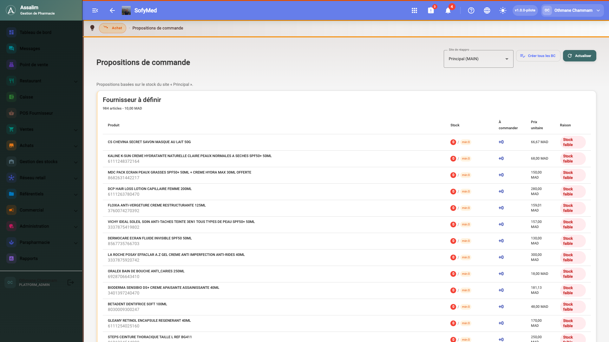
8.2 Devis fournisseur
Le devis fournisseur est une demande de prix ou une proposition d'achat adressée au fournisseur avant de vous engager sur une commande ferme. Il se rapproche du devis de vente côté client, mais ici c'est vous qui sollicitez le fournisseur.
Ouvrez la liste Devis fournisseur dans le menu Achats, créez un nouveau devis, choisissez le fournisseur et les lignes (produits, quantités, prix négociés). Vous pouvez ensuite l'envoyer ou le convertir en commande d'achat lorsque le fournisseur accepte.
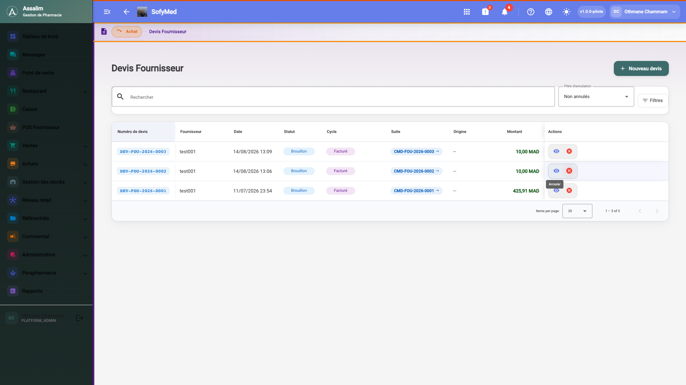
8.3 Commandes d'achat
Créez une commande d'achat (bon de commande) à adresser à un fournisseur. Elle peut être générée depuis une proposition ou créée manuellement.
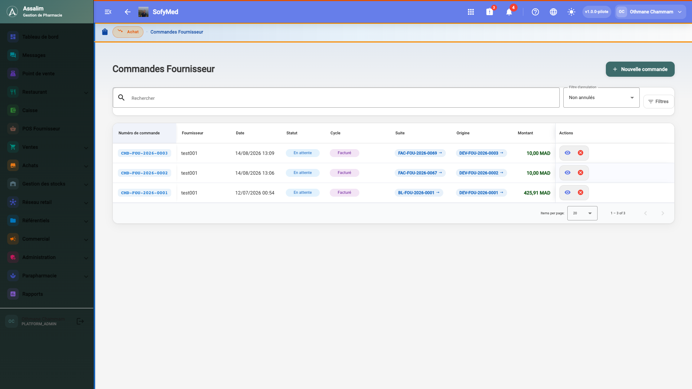
8.4 Bons de réception
À la réception des marchandises, créez un bon de réception. Cette étape met à jour les stocks et enregistre les quantités effectivement reçues (qui peuvent différer de ce qui a été commandé).
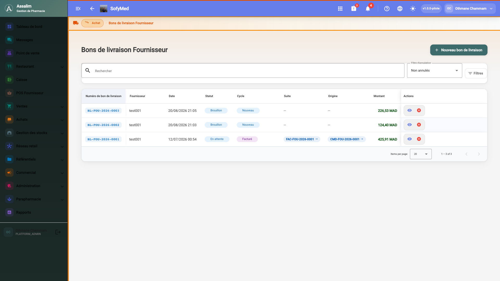
8.5 Factures fournisseur
Enregistrez les factures reçues de vos fournisseurs pour un suivi comptable précis de vos engagements et de votre dette fournisseur.
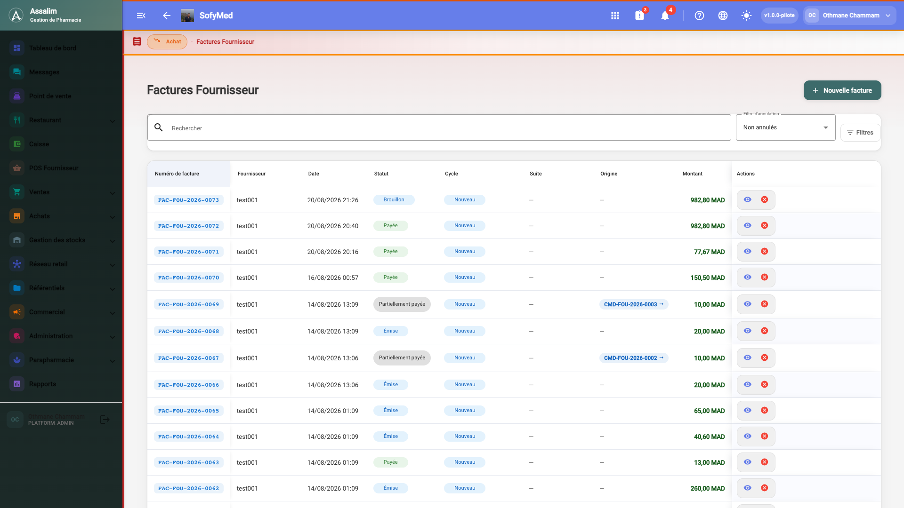
Historique des prix d'achat
Assalim conserve l'historique des prix d'achat pour chaque produit. Vous pouvez consulter l'évolution des tarifs fournisseurs et détecter les variations.
8.6 Paiements fournisseurs
Enregistrez les règlements effectués à vos fournisseurs et suivez votre dette fournisseur en temps réel.
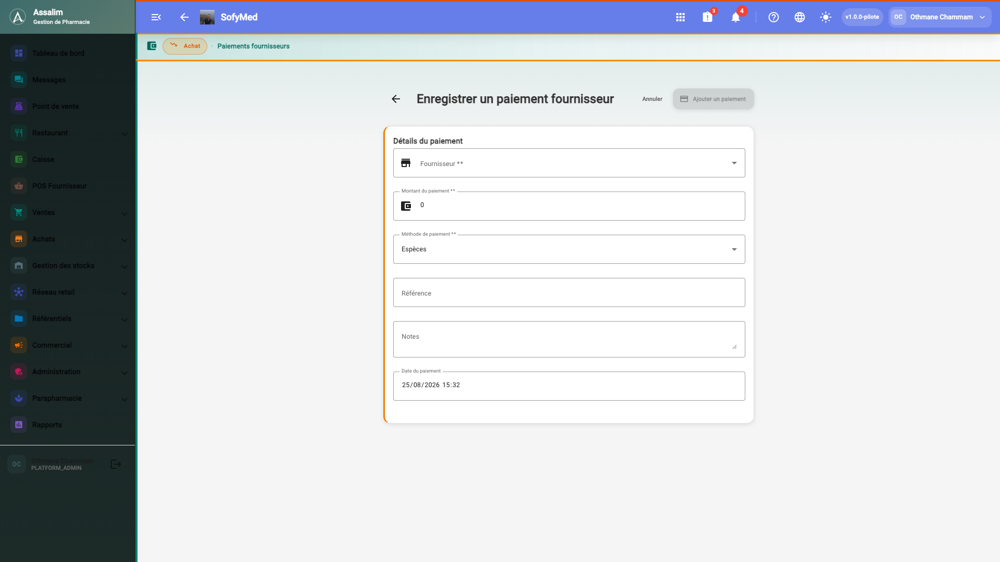
Stock & Inventaire
Suivi en temps réel de vos niveaux de stock
9.1 État des stocks
La page Stock vous donne une vue instantanée des quantités disponibles pour chaque produit, avec un code couleur d'alerte.

Indicateurs de stock
| Couleur | Signification |
|---|---|
| ● Normal | Stock suffisant, au-dessus du seuil minimum |
| ● Faible | Stock proche du seuil minimum — à réapprovisionner |
| ● Rupture | Stock nul ou en dessous du minimum critique |
Mouvements de stock
Chaque entrée ou sortie de stock est tracée avec la date, le motif (vente, achat, ajustement, inventaire) et le document source associé.
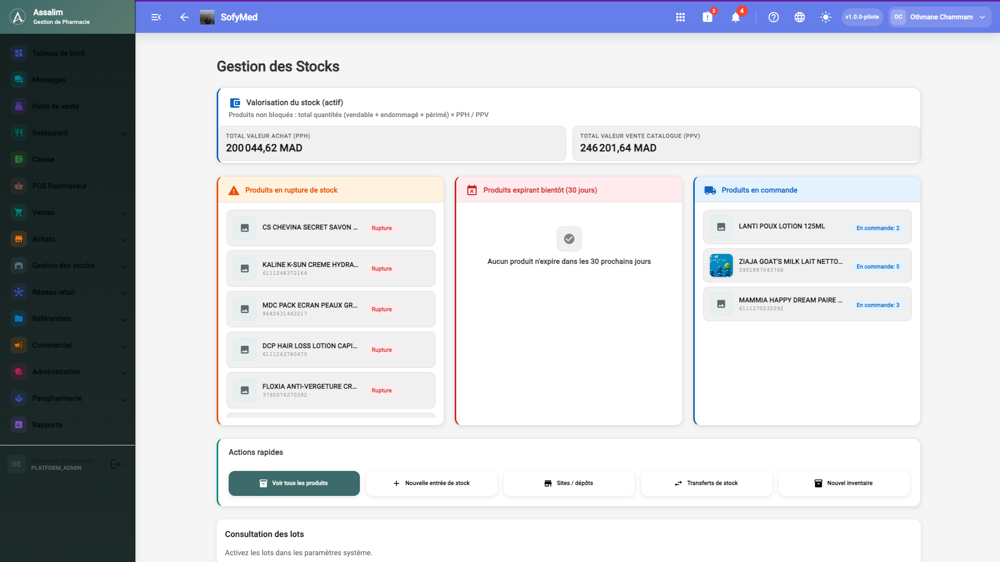
9.2 Inventaires
Le module Inventaire vous permet de réaliser des comptages physiques et de réconcilier les quantités théoriques avec les quantités réelles.
Créer un inventaire
Cliquez sur "+ Nouvel inventaire" et choisissez si vous faites un inventaire complet ou partiel (par catégorie).
Saisir les quantités réelles
Pour chaque produit, saisissez la quantité physiquement comptée. Vous pouvez aussi importer les données via un fichier CSV.
Vérifier les écarts
L'application affiche les différences entre le stock théorique et le stock compté.
Valider et ajuster
Confirmez la finalisation de l'inventaire. Les stocks sont mis à jour automatiquement avec les écarts constatés.
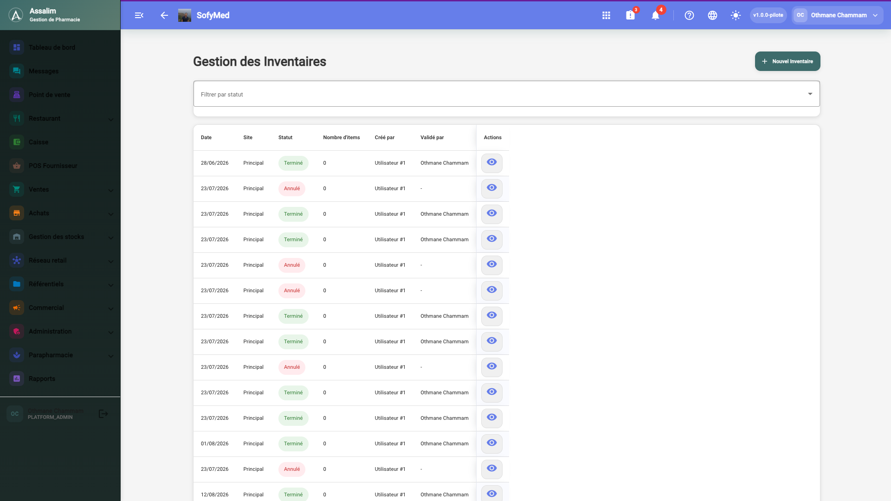
9.3 Alertes de stock et d'achat
Les alertes sont accessibles depuis l'icône cloche (notifications) dans la barre d'outils, pour les utilisateurs autorisés. Un badge indique le nombre d'éléments non lus. Cliquez sur une ligne pour ouvrir l'écran concerné (stock, achat, etc.).
En bas du panneau, des raccourcis permettent d'aller directement à la page Stock ou aux transactions d'achat.
- Alerte de rupture / stock faible : produit en dessous du seuil minimum (les alertes similaires peuvent être regroupées)
- Alerte de péremption : produit approchant ou ayant dépassé sa date d'expiration
- Autres alertes métier : selon la configuration, des alertes liées aux achats peuvent également apparaître
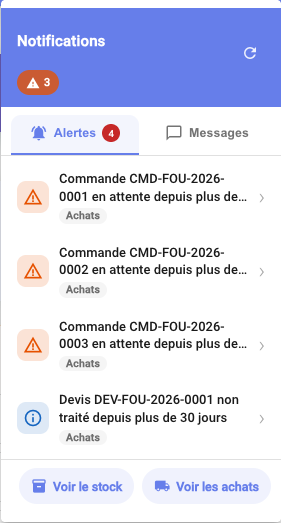
9.4 Gestion des périmés
La page Stock → Périmés (/stock/expiry) liste tous les lots dont la
date limite de consommation (DLC) approche ou est dépassée.
Codes couleur
- 🔴 Rouge — lot déjà périmé
- 🟠 Orange — expire dans les 7 prochains jours (critique)
- 🟢 Vert — expire dans le délai filtré mais pas critique
Filtrer
Utilisez le sélecteur "Afficher les lots expirant dans X jours" pour ajuster la plage d'analyse (7, 30, 60, 90 jours).
Détruire un lot
Cliquer sur Détruire
Sur la ligne du lot concerné.
Saisir la quantité
Entrez la quantité à sortir du stock vendable (destruction totale ou partielle).
Confirmer
Le stock vendable est réduit et le mouvement est enregistré.
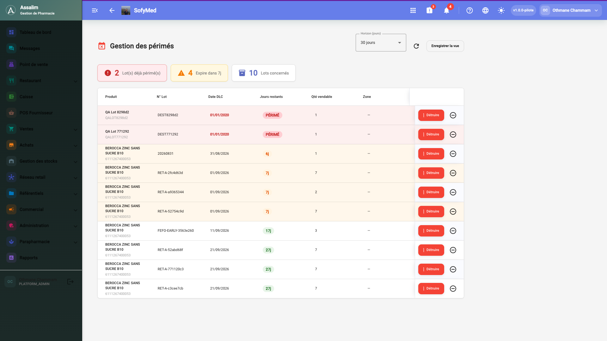
9.5 Sites / dépôts
Stock → Sites / dépôts (/stock/sites) liste les lieux de stockage.
Le site marqué POS (défaut) est celui utilisé par la caisse et les ventes.
Les autres sites (entrepôt, réserve, second magasin) ne reçoivent du stock que par transfert.
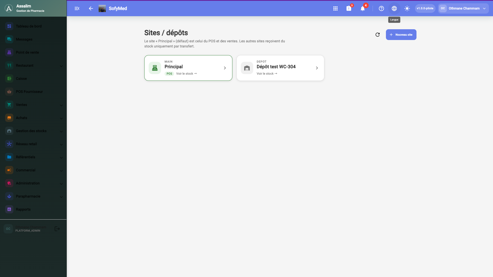
Créer un site
Cliquez Nouveau site, saisissez un code (ex. DEPOT) et un nom.
Consulter le stock d'un site
Ouvrez la carte du site pour voir les quantités vendables, endommagées et périmées.
Changer le site POS
Sur un site qui n'est pas le défaut, Définir comme POS : les ventes suivantes débiteront ce stock.
9.6 Transferts de stock
Stock → Transferts (/stock/transfers) déplace des quantités d'un site vers un autre.
Le cycle complet comprend l'expédition (sortie du site source), le transit éventuel
et la réception au site destination. Les écarts de quantité sont saisis à la réception ;
un transfert au-dessus du seuil configuré peut exiger une approbation manager.
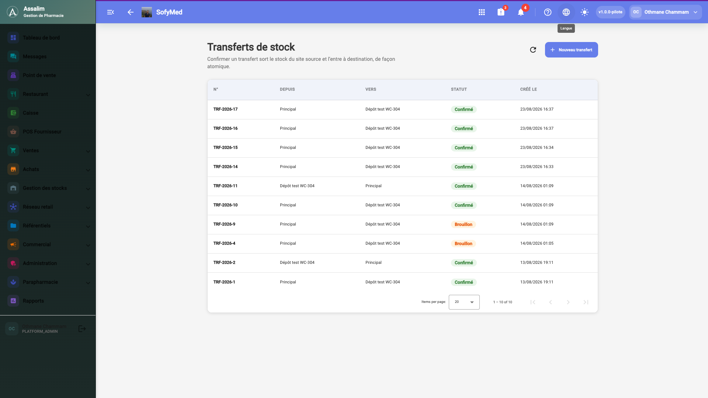
Nouveau transfert
Choisissez le site source, le site destination, ajoutez les produits et quantités.
Confirmer
Cochez Confirmer maintenant pour exécuter le mouvement tout de suite, ou enregistrez puis confirmez plus tard depuis la fiche.
9.7 Réseau retail
Édition Retail, profil Standard ou Avancé : le menu
Réseau retail regroupe la consolidation multi-sites (/retail-network/*).
Droits requis : permission stock:read (masqué en édition Essential ou profil Simple).
| Écran | Route | Usage |
|---|---|---|
| Tableau de bord réseau | /retail-network/network | KPIs vendable / réservé / disponible par site ; liens catalogue et réappro |
| Seuils & assortiments | /retail-network/site-catalog | Min/max, couverture jours, assortiment actif par site |
| Réapprovisionnement | /retail-network/replenishment | Suggestions par site ; création commandes fournisseur groupées |
| Centre retours | /retail-network/returns | Politiques de retour ; avoirs client et retours fournisseur récents |
| Approbations | /retail-network/approvals | File des demandes en attente (transfert, remise, etc.) |
| Inventaire cyclique | /retail-network/cyclic-inventory | Plans par site/zone ; ouverture du comptage |
| CMP / démarque | /retail-network/shrinkage | Coût moyen pondéré par site ; saisie démarque |
| Réservations stock | /retail-network/reservations | Réservations actives ; libération ou expiration |
Sur la fiche produit, le panneau réseau permet de lier plusieurs fournisseurs et des conversions d'unités. Sur une commande achat, le panneau de suivi affiche réception partielle et rapprochement 3-way (commandé / livré / facturé). La fidélité (paramètres + fiche client) inclut expiration des points et historique des mouvements.
Caisse
Gestion des sessions de caisse et des mouvements d'espèces
Le module Caisse vous permet de gérer les fonds en espèces de votre commerce avec une traçabilité complète.
Ouvrir une session de caisse
Accéder à la caisse
Ouvrez Caisse depuis le Hub (tuile dédiée) ou depuis le menu latéral.
Déclarer le fond de caisse
Saisissez le montant en espèces présent dans la caisse au moment de l'ouverture.
Ouvrir la session
Cliquez sur "Ouvrir la caisse". La session démarre et le POS devient opérationnel.
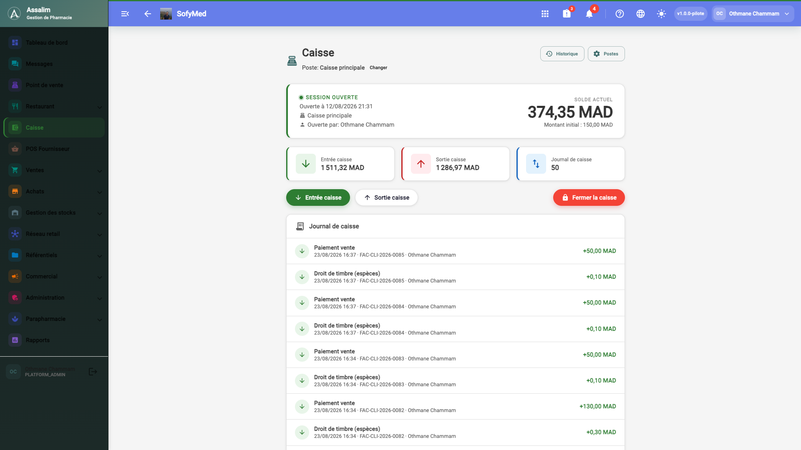
Mouvements de caisse
En cours de session, enregistrez les mouvements non liés aux ventes :
- Entrée d'espèces : apport de monnaie, remboursement reçu…
- Sortie d'espèces : retrait pour dépenses courantes, paiement fournisseur en espèces…
Le pavé numérique est intégré : saisissez le montant directement, sans bouton supplémentaire. Choisissez le mode de paiement (Espèces, Carte, Chèque, Virement, Autre) : seules les espèces bougent le fond de caisse théorique. Une entrée ou une sortie exige une catégorie (apport de monnaie, fournitures, transport…). Une sortie exige aussi un motif. Les catégories se gèrent en §10.5.
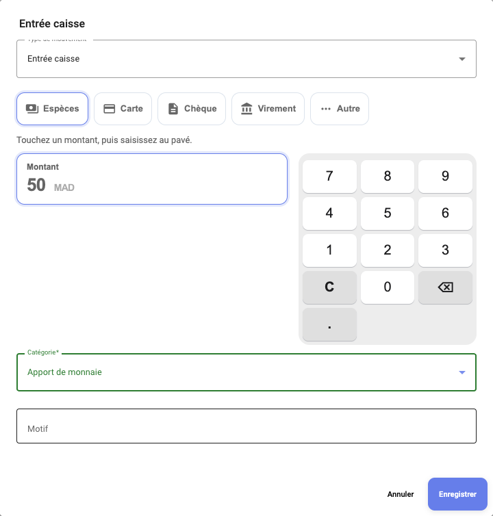
Fermer la session et rapport de clôture
Compter les espèces
En fin de journée, comptez physiquement le contenu de votre caisse.
Saisir le solde réel
Touchez Montant compté, saisissez au pavé (toujours visible), puis confirmez le même montant. Le bouton « Pavé numérique » n’est plus nécessaire.
Fermer la session
Cliquez sur "Fermer la caisse". Un rapport de clôture est généré automatiquement.
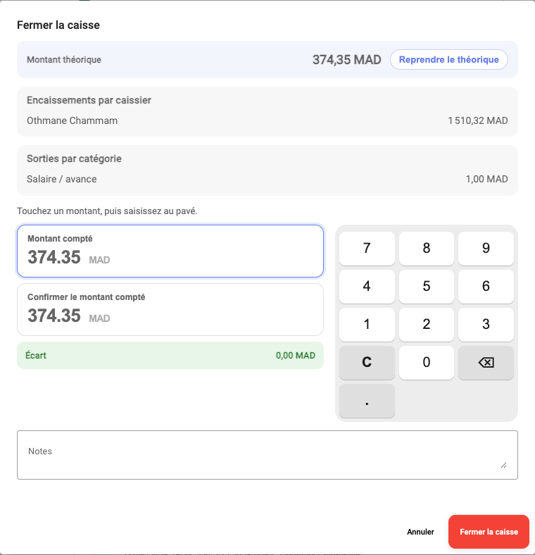
Historique des sessions
Accédez à l'onglet "Historique" pour consulter toutes les sessions passées, leurs rapports de clôture et les mouvements associés.
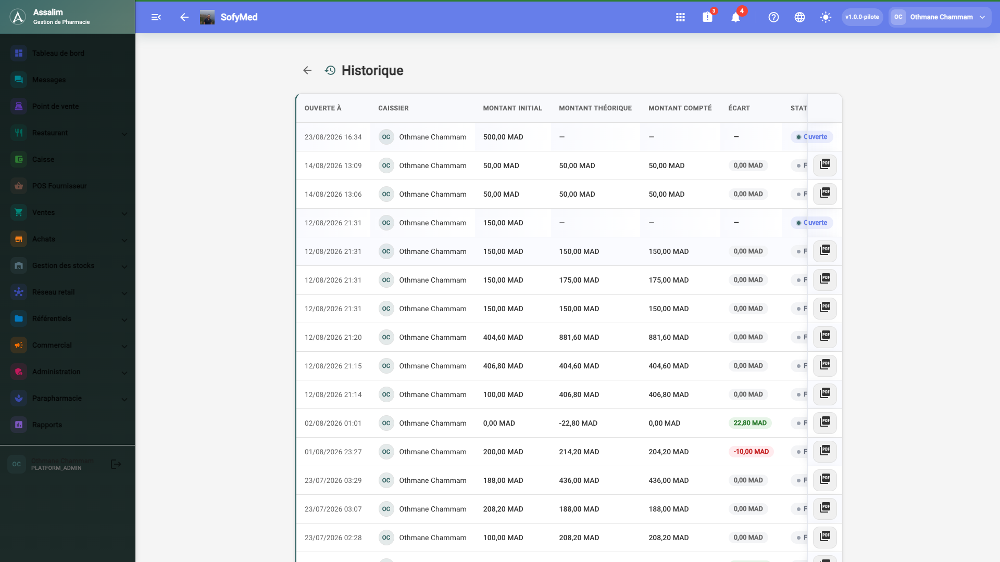
10.5 Catégories de caisse
Accès : Administration → Catégories de caisse. Chaque entrée ou sortie d’espèces doit être classée (apport de monnaie, fournitures, transport, salaire, divers…). Le catalogue est propre à l’établissement : créez, modifiez ou désactivez une catégorie sans toucher au reste de l’application.
- Code : identifiant unique (ex.
SUPPLIES). - Libellé français, et libellé arabe optionnel.
- Sens : entrée, sortie, ou les deux.
- Une catégorie désactivée disparaît du select du dialogue, mais reste visible sur l’historique déjà enregistré.
Cliquez une ligne ou + Nouvelle pour ouvrir la fiche : code, libellés, sens, ordre et actif.
Rapports & Analyses
Exploitez vos données pour piloter votre activité
La section Rapports vous offre une vue analytique de toute votre activité commerciale avec des exports dans différents formats.
La première page Rapports est organisée en sections repliables : accès rapide aux graphiques (analytique) et au tableau de bord, liens vers la caisse et le POS vente, raccourcis achats (analytique achats, rotation des stocks, exports, POS achat, factures et commandes fournisseur) et raccourcis ventes (factures, commandes, bons de livraison, devis). Ouvrez la section qui vous intéresse puis le bouton correspondant.
11.0 Page Rapports : vue d'ensemble
Le tableau suivant liste les rapports les plus courants accessibles depuis les menus et liens de cette zone (les intitulés exacts à l'écran peuvent varier légèrement selon la version).
| Rapport | Description | Export |
|---|---|---|
| Ventes par période | CA, quantités vendues par jour / semaine / mois | CSV, Excel, PDF |
| Ventes par produit | Classement des articles par volume de vente | CSV, Excel |
| Ventes par client | CA réalisé par client et solde en cours | CSV, Excel |
| Marge brute | Marge par produit et globale sur la période | CSV, Excel, PDF |
| Achats par fournisseur | Volume d'achat et dette par fournisseur | CSV, Excel |
| État des stocks | Valeur du stock et produits en rupture | CSV, Excel, PDF |
| Caisse | Récapitulatif des sessions de caisse | |
| Analytique | Graphiques interactifs d'évolution | — |
| Encours clients / crédits | Soldes dus par client, plafonds de crédit, disponible restant, clients en dépassement ; option d'inclure les soldes nuls | CSV |
11.1 Rapport encours clients (crédits)
Dans la page Rapports, la section dédiée aux encours clients permet de charger un état des créances : total des créances, nombre de clients concernés, et un tableau détaillé (nom, téléphone, solde, limite de crédit, crédit disponible, indicateur de dépassement). Cochez l'option pour inclure les clients à solde nul si vous souhaitez une vue exhaustive. Un bouton permet d'exporter les données en CSV.
11.2 Filtrer et exporter un rapport
Choisir le rapport
Cliquez sur la catégorie de rapport souhaitée dans le menu.
Définir la période
Utilisez le sélecteur de date pour définir la plage temporelle.
Appliquer des filtres
Affinez par catégorie, produit, client ou fournisseur selon le rapport.
Exporter
Cliquez sur le bouton d'export souhaité (CSV, Excel ou PDF).
11.3 Vieillissement créances (Aging 30/60/90j)
L'onglet Aging créances vous donne une vue de l'ensemble de vos factures impayées, classées par ancienneté. Cela vous aide à prioriser vos relances clients.
| Colonne | Signification |
|---|---|
| Non échu | Factures dont la date d'échéance n'est pas encore atteinte |
| 0–30 j | En retard de moins d'un mois |
| 31–60 j | En retard d'un à deux mois |
| 61–90 j | En retard de deux à trois mois |
| > 90 j | En retard de plus de trois mois — à relancer en priorité |
Cliquez sur Exporter PDF ou Imprimer pour une version papier prête à l'envoi.
11.4 Analyse ABC produits
L'analyse ABC classe vos produits en trois catégories selon leur contribution au chiffre d'affaires :
- 🅰 Classe A — Top 70 % du CA : vos produits phares. Priorité de stock et négociation fournisseur.
- 🅱 Classe B — 20 % suivants : produits importants à surveiller.
- 🅲 Classe C — 10 % restants : produits marginaux, à rationaliser éventuellement.
Sélectionnez une période d'analyse (mois, trimestre, année) et cliquez Analyser.
Les cartes de résumé affichent le nombre de produits et leur CA par classe. Le tableau détaillé montre le rang, le % du CA, et le cumul.
11.5 Avoirs clients (rapport)
L'onglet Avoirs clients liste tous les avoirs émis sur une période donnée (numéro AVOIR-CLI-XXXX). Il affiche le client, le montant, la facture d'origine et la date.
- Filtrez par période avec les sélecteurs de date.
- Le total des avoirs est affiché en bas du tableau.
- Exportez en CSV pour votre comptabilité.
11.6 Exports comptables DGI
L'onglet Exports comptables (DGI) permet de générer les fichiers réglementaires pour la Direction Générale des Impôts du Maroc.
| Export | Contenu |
|---|---|
| Journal des écritures | Toutes les écritures comptables (ventes, achats, encaissements, décaissements) sur la période |
| Grand Livre | Récapitulatif par compte comptable (3421, 4411, 7111, etc.) avec soldes |
| Déclaration TVA | Base imposable et TVA collectée/déductible par taux |
Sélectionner la période
Choisissez les dates de début et de fin.
Cliquer sur le bouton de téléchargement
Le fichier CSV est téléchargé automatiquement.
HoReCa — Restauration
Gestion des tables, commandes en salle, écran cuisine (KDS), statistiques et appel serveur
/horeca/salle (plan de salle) et /horeca/cuisine
(écran cuisine KDS). La racine /horeca redirige automatiquement vers le plan de salle.
12.1 Plan de salle
L'écran Plan de salle offre une vue graphique de votre restaurant. Chaque table est positionnée sur la carte et affiche son état en temps réel. La cloche en haut à droite signale les appels serveur en attente ; chaque table peut afficher un QR code imprimable. Le bouton Tout voir cadre toutes les tables et les murs dans l’écran. Une réservation confirmée s’affiche en pastille horaire sur la table (ex. 20h · 4 p.). En configuration, la réorganisation est active d’emblée (glisser, poignées, Décor). Le QR d’appel serveur reste sur le plan d’exploitation. Vous pouvez tourner une table ou un décor (45°), redimensionner tables et décors par les poignées en réorganisation, ajouter des zones (terrasse, bar…) et du décor (plante, comptoir, banquette, porte), et vous déplacer via la mini-carte.
Statuts des tables
| Statut | Description |
|---|---|
| Libre | Table disponible, prête à accueillir des clients |
| Occupée | Clients installés, commande en cours |
| Réservée | Table réservée pour une heure précise |
| En attente | Commande envoyée en cuisine, en préparation |
12.2 Gestion des tables
Cliquez sur une table du plan de salle pour accéder à son menu de commande.
Ouvrir la table
Cliquez sur une table libre pour démarrer une nouvelle commande.
Ajouter les articles
Touchez un plat ou scannez-le. S’il a des suppléments, une feuille Options s’ouvre : cochez les extras et saisissez la note cuisine (sans oignon, bien cuit…) dans le même écran — il n’y a plus d’icône notes à part. Avant l’envoi cuisine, ⋯ sur la ligne puis Options rouvre cette feuille pour modifier ou retirer les extras. Après Ajouter, le curseur revient dans la recherche pour le scan suivant.
Deux fois le même plat avec des notes différentes = deux lignes (chacune sa note, deux tickets KDS). Même plat, mêmes extras, même note = une ligne avec la quantité augmentée.
Envoyer en cuisine
Cliquez sur "Envoyer en cuisine". Les articles apparaissent immédiatement sur l'écran KDS.
Encaisser
Une fois le repas terminé, cliquez sur "Encaisser" pour passer en mode POS et régler la note.
Modes de service
- Sur place (Dine-in) : service en salle avec table associée
- À emporter (Takeaway) : commande sans table
- Livraison (Delivery) : commande avec adresse de livraison
Transfert de table
Pour déplacer un client d'une table à une autre (libération d'une table, réorganisation…), utilisez la fonction "Transférer la table" depuis le menu de la table source.
12.3 Écran cuisine (KDS)
Le KDS (Kitchen Display System) est l'écran dédié à la cuisine. Il affiche en temps réel toutes les commandes envoyées depuis les tables.
Utilisation du KDS
- Chaque ticket affiche la table, les articles, les suppléments et la note cuisine, plus l’heure d’envoi
- Le cuisinier coche chaque article au fur et à mesure de sa préparation
- Quand tous les articles sont prêts, le ticket est marqué comme "Prêt"
- Un signal est envoyé au serveur pour le service
12.4 Réservations
Gérez les réservations de vos clients directement depuis Assalim.
Créer une réservation
Cliquer sur "Nouvelle réservation"
Depuis la page Réservations ou depuis une table du plan de salle.
Renseigner les informations
Nom du client, date et heure, nombre de couverts, table souhaitée (optionnel) et notes spéciales.
Confirmer
Enregistrez la réservation. Une pastille horaire (ex. 20h · 4 p.) apparaît sur la table du plan de salle.
12.5 Statistiques salle
Accès : menu Statistiques salle (/horeca/stats) ou via le hub Rapports.
- KPIs : CA total, sessions, couverts moyens, durée moyenne, taux de rotation.
- Heatmap horaire : histogramme du CA par tranche horaire (heures de pointe).
- Performance par table : classement par CA, sessions et durée d'occupation.
- CA par serveur : classement des utilisateurs par chiffre d'affaires généré.
- Période : 7 jours, 30 jours, 90 jours ou dates personnalisées.
- Export PDF : bouton « Exporter PDF » → impression via le navigateur.
12.6 Partager l'addition (split bill)
Depuis la session table, le bouton « Partager l'addition » permet de répartir les articles entre deux parts (ex. deux groupes de convives).
Ouvrir le dialogue
Cliquez « Partager l'addition » depuis le pied de page de la session.
Répartir les quantités
Pour chaque article, indiquez combien va sur l'addition 1 et l'addition 2. Utilisez « Répartir équitablement » pour diviser en un clic.
Encaisser chaque part
À la confirmation, une sous-commande est créée par part et le POS s'ouvre pour encaisser la première.
12.7 Commande comptoir (emporter / livraison)
Pour les commandes sans table assignée, utilisez le bouton « Comptoir » sur le plan de salle.
Choisissez Emporter ou Livraison — la page /horeca/comptoir s'ouvre
avec la même interface que la session table (recherche produits, envoi cuisine, encaissement).
12.8 Appel serveur (QR code)
Chaque table dispose d'un QR code unique permettant aux clients d'appeler un serveur depuis leur téléphone, sans compte ni application.
/call/{token} est accessible sans connexion. Le client scanne le QR, voit le nom de sa table
et appuie sur « Appeler le serveur ». Un message optionnel peut accompagner l'appel.
Mise en place (personnel)
Afficher le QR code
Sur le plan de salle, cliquez l'icône QR code de la table (visible sans survol, y compris au tactile).
Imprimer ou copier
Imprimez le QR (bouton « Imprimer ») pour le plastifier sur la table, ou copiez le lien.
Traiter les appels
La cloche du plan de salle affiche les appels en attente. Acquittez-les depuis le panneau latéral.
/call/{token} — le client appelle un serveur sans connexion.12.9 Livraisons téléphone / Glovo / Uber
Le board HoReCa → Livraisons (/horeca/livraisons) suit les commandes
à livrer. Il n'y a pas d'API partenaire : le personnel recopie le ticket Glovo / Uber
(n° plateforme, client, adresse) ou saisit une commande téléphone.
Créer une livraison
Nouvelle livraison
Depuis le board, ou depuis le plan de salle → Comptoir → Livraison.
Canal
Téléphone (n° client requis), Glovo / Uber Eats (n° commande plateforme requis), ou Autre.
Prendre commande
Après enregistrement, le comptoir s'ouvre pour ajouter les articles. L'envoi cuisine n'a lieu que si au moins une ligne va en cuisine ; le ticket passe alors en En prép.
Avancer le statut
Sur la carte : Reçue → En prép. → Prête → En route → Livrée. WhatsApp est proposé si le canal est téléphone et qu'un n° est renseigné.
Messagerie Interne
Communiquez avec vos collègues directement depuis Assalim
Le module de messagerie interne permet aux utilisateurs de votre établissement
de communiquer entre eux sans quitter l'application. Ouvrez la page Messages
depuis le menu latéral ou une tuile du Hub (adresse /messages).
Fonctionnalités de messagerie
- Conversations : démarrez une discussion en tête-à-tête ou un groupe depuis la liste des messages
- Messages : envoyez des textes avec pièces jointes
- Recherche : retrouvez rapidement une conversation ou un message
- Notifications : recevez des alertes en temps réel pour les nouveaux messages
- Ouverture : en cliquant une conversation, le fil descend jusqu’au dernier message (au-dessus de la zone de saisie)
- Tactile : listes, bulles et saisie se touchent au doigt (cibles larges). En mode tactile ou au POS, le clavier à l’écran est visible sous la zone de saisie, sans bouton supplémentaire
Démarrer une conversation
Ouvrir la messagerie
Cliquez sur l'icône de messagerie dans le menu ou accédez à Messages.
Nouvelle conversation
Cliquez sur « Nouvelle conversation », cochez un collègue pour un échange en tête-à-tête, ou plusieurs (au moins deux autres personnes) pour un groupe. Vous pouvez donner un nom au groupe (optionnel).
Envoyer un message
Touchez la zone de saisie (ou le clavier tactile s’il est affiché), puis le bouton d’envoi. Les actions modifier / supprimer d’un message sont visibles au doigt, sans survol.
13.3 Ouvrir une conversation
Depuis la liste, cliquez une conversation : le fil s’ouvre déjà en bas, sur le dernier message (texte, vocal ou image). Vous n’avez pas à scroller manuellement. Si une image charge ensuite, le fil reste collé en bas tant que vous n’êtes pas remonté lire l’historique. « Charger plus anciens » conserve votre position dans le fil.
Commercial
Fidélité, promotions et grilles tarifaires
Le menu latéral Commercial regroupe les règles commerciales de l'établissement : fidélité, promotions et grilles tarifaires. Il est distinct du menu Administration (utilisateurs, établissement, catégories de caisse, sauvegarde…).
14.1 Fidélité
Configurez le programme depuis Commercial → Fidélité. L'usage à la caisse (widget points, rachat) est décrit en section 6.6.
| Paramètre | Description |
|---|---|
| Activer le programme | Active ou désactive le widget fidélité au POS |
| Points par MAD dépensé | Nombre de points crédités pour 1 MAD de vente |
| Valeur d'un point (en MAD) | Conversion lors du rachat (ex: 1 point = 0.1 MAD) |
| % max remise par rachat | Plafonne la remise par fidélité (ex: 20% max de la facture) |
| Seuil Bronze / Argent / Or | Points nécessaires pour atteindre chaque niveau |
Cliquez Enregistrer pour appliquer les modifications. Les changements prennent effet immédiatement au POS.
14.2 Promotions
Accès : Commercial → Promotions. Créez des campagnes limitées dans le temps (%, montant, prix barré ou offre 2+1). Au POS, le prix catalogue est barré et un badge affiche la promo.
| Type | Effet au POS |
|---|---|
| % remise | Pourcentage sur le prix unitaire |
| Montant | Remise en MAD sur le prix unitaire |
| Prix barré | Prix forcé (étiquette « prix barré ») |
| 2+1 / X+Y | Pack : acheter X, en obtenir Y offerts |
- Ciblez des produits et/ou des catégories. Aucune cible = tout le catalogue.
- Si plusieurs promotions s'appliquent, une seule est retenue (priorité la plus élevée).
- Le cumul des prix au POS : catalogue → grille client → 1 promo → % niveau fidélité, puis rachat de points.
Cliquez une ligne ou l'icône œil pour ouvrir la fiche : type, valeur, dates, priorité, catégories et produits ciblés, puis Modifier ou Supprimer.
14.3 Grilles tarifaires
Accès : Commercial → Grilles tarifaires. Une grille définit des prix par produit (et éventuellement un palier de quantité minimale). Vous l'affectez au client depuis sa fiche (liste déroulante), pas depuis le POS.
Créer la grille
Nommez-la, ajoutez des lignes (produit, qté min, prix).
L'assigner au client
Ouvrez la fiche client et choisissez la grille dans le champ prévu.
Vendre au POS
Dès que ce client est sélectionné, le prix de la grille s'applique (avant promo et fidélité).
L'icône œil ouvre le détail : nom, statut actif, et les lignes (produit, quantité min, prix unitaire).
Paramètres
Configuration de l'application, des utilisateurs, de la licence et sauvegarde de la base
15.1 Paramètres généraux
Configurez les informations de votre établissement, l'apparence des documents et les réglages globaux de l'application.
| Paramètre | Description |
|---|---|
| Nom de la société | Nom qui apparaît sur vos factures et reçus |
| Logo | Logo imprimé sur les documents |
| Adresse | Adresse complète de l'établissement |
| Téléphone / E-mail | Coordonnées de contact affichées sur les documents |
| Devise | Monnaie utilisée (ex. : MAD, EUR, USD) |
| Pas des montants | Arrondi HALF_UP des totaux ticket uniquement (sous-total, récap Ventes / Retours / Remises lignes, dû, droit de timbre, pourboire, espèces, rendu). Les lignes (PU et total de ligne) restent au tarif exact. Défaut 0,10 pour le MAD. Le taux % n’est pas arrondi au pas. Ex. : ligne 13,05, total ticket 13,10 ; timbre 0,25 % sur 100 → 0,30. |
| TVA par défaut | Taux de TVA appliqué par défaut sur les produits |
| Pied de page reçu | Message personnalisé sur les reçus caisse |
| Délai scan | Temps d'attente après scan code-barres (ms) |
| Désactiver la gestion de stock | Si activé : pas de suivi des stocks à la vente (caisse, BL, factures) et modules Stock / Inventaire masqués ; si désactivé : comportement habituel |
| Autoriser le stock négatif | Si activé (gestion de stock allumée) : une vente ou un BL peut passer le stock vendable sous zéro, après confirmation en caisse. Désactivé par défaut. Sans effet si la gestion de stock est désactivée. Voir §6.9. |
| Verrouillage caisse après inactivité | Délai en secondes avant le mur de visages au POS (défaut 90, 0 = jamais, max 3600). Voir §6.11. |
| Droit de timbre par mode | Taux en % sur la part encaissée (hors timbre). Défaut 0. Hors CA, comme le pourboire. Voir §7.5. |
| Pourboires | Si activé : ligne Pourboire (montant MAD) en bas du bloc paiement POS (sous les moyens ou le mixte). Hors total facture ; inclus dans l’encaissement (espèces ou carte). Montant et mode enregistrés sur la facture et dans le brouillon. Désactivé par défaut. |
| Prix sur les étiquettes | Affiche le prix de vente sur les étiquettes rayon (A4 ou rouleau). Voir §4.1. |
15.2 Gestion des utilisateurs
Créez et gérez les comptes de tous les utilisateurs qui ont accès à Assalim dans votre établissement.
Créer un utilisateur
Cliquer sur "+ Nouvel utilisateur"
Depuis la section Paramètres → Utilisateurs.
Renseigner les informations
Prénom, nom, adresse e-mail (servira d'identifiant de connexion) et mot de passe initial.
Attribuer un rôle
Sélectionnez le rôle approprié : Administrateur, Gérant, Pharmacien, Caissier ou Cuisine.
Enregistrer
L'utilisateur peut maintenant se connecter avec ses identifiants.
15.3 Rôles & Permissions
Le système de permissions d'Assalim est très granulaire. Vous pouvez définir précisément ce qu'un rôle peut ou ne peut pas faire.
Permissions disponibles
| Ressource | Actions |
|---|---|
| Tableau de bord | Lecture |
| POS Vente | Lecture / Écriture |
| POS Achat | Lecture / Écriture |
| Ventes (devis, commandes, BL, factures) | Lecture / Création / Modification / Suppression |
| Paiements clients | Lecture / Écriture |
| Achats (toutes étapes) | Lecture / Création / Modification |
| Paiements fournisseurs | Lecture / Écriture |
| Stocks | Lecture / Écriture |
| Inventaires | Lecture / Écriture |
| Produits / Catégories | Lecture / Écriture |
| Clients / Fournisseurs | Lecture / Écriture |
| Caisse | Lecture / Écriture |
| Rapports | Lecture |
| Utilisateurs | Lecture / Création / Modification |
| Paramètres | Lecture / Écriture |
| Cuisine (KDS) | Lecture / Écriture |
Permissions individuelles (surcharges)
En plus des rôles, vous pouvez accorder ou retirer une permission spécifique à un utilisateur individuel, sans modifier son rôle global. Accédez à la fiche de l'utilisateur → onglet "Permissions".
15.4 Gestion de la licence
La section licence vous permet de consulter l'état de votre licence Assalim et de l'activer ou de la renouveler.
Activer une licence
Obtenir la clé de licence
Votre revendeur vous fournit une clé d'activation unique.
Accéder à Paramètres → Licence
Ouvrez la section de gestion de la licence.
Saisir la clé
Collez votre clé dans le champ prévu et cliquez sur "Activer".
Confirmation
Un message de succès confirme l'activation. La date d'expiration est mise à jour.
15.5 Historique des connexions
L'historique des connexions enregistre chaque accès à l'application : utilisateur, date, heure, adresse IP et appareil utilisé. Cela permet de détecter des connexions suspectes.
15.6 Double authentification (MFA)
Le MFA (Multi-Factor Authentication) ajoute une couche de sécurité à votre compte. En plus de votre mot de passe, un code à 6 chiffres généré par une application comme Google Authenticator ou Authy sera demandé à chaque connexion.
Activer le MFA
Ouvrir les paramètres MFA
Allez dans Paramètres → Sécurité (MFA).
Scanner le QR code
Ouvrez Google Authenticator sur votre téléphone → + → Scanner un QR code → pointez votre caméra sur le code affiché.
Saisir le code de vérification
Entrez le code à 6 chiffres affiché dans l'application → cliquez Vérifier et activer.
Désactiver le MFA
Dans la même page, cliquez Désactiver, saisissez le code TOTP actuel pour confirmer.
15.7 Identifiants fiscaux DGI
Renseignez vos identifiants fiscaux dans Paramètres → Établissement, section "Identifiants fiscaux DGI Maroc". Ces informations apparaissent automatiquement sur tous vos PDFs (factures, avoirs, bons de livraison).
| Champ | Description |
|---|---|
| ICE | Identifiant Commun de l'Entreprise (15 chiffres) |
| IF | Identifiant Fiscal (numéro d'imposition) |
| RC | Registre de Commerce |
| Patente | Numéro de patente |
| Capital social | Capital en MAD (affiché sur les factures) |
15.8 Backup base de données
Accès : Paramètres → Backup base de données (/settings/backup).
Réservé aux administrateurs.
Télécharger un backup
Ouvrir la page Backup
Depuis Paramètres, cliquez le lien rouge « Backup base de données ».
Télécharger
Saisissez un mot de passe (≥ 8 caractères) deux fois, puis cliquez « Télécharger le backup ». Un fichier chiffré .assalim.bak est téléchargé.
Conserver en lieu sûr
Stockez le fichier sur un support externe ou un cloud chiffré.
Restaurer depuis un backup
Sélectionner le fichier
Choisissez un fichier .assalim.bak (ou un ancien .sql) et saisissez le mot de passe si le fichier est chiffré.
Confirmer
Tapez exactement RESTAURER dans le champ de confirmation.
Redémarrer le serveur
Après la restauration, redémarrez le backend pour garantir la cohérence des données.
pg_dump et psql
dans le PATH système (ou configurés via pg.tools.path).
15.9 Options de l'écran caisse
Accès : Paramètres → Options de l'écran caisse. Un interrupteur ne peut que masquer un bloc déjà prévu par le profil (magasin, comptoir, pharmacie, restaurant) : remises, retours, pourboire, recherche, pièces jointes, conversation, etc.
- Toujours visibles (pas d’interrupteur) : chip Client / Fournisseur.
- Selon le contexte (pas d’interrupteur) : solde et plafond, fidélité, tarifs commerciaux — voir §6.10.
- « Tout afficher » restaure les blocs masqués manuellement.
- Catalogue (catégories et tuiles) : si vous le masquez, la caisse ne montre plus le rayon ; il reste le scan et la recherche (liste temporaire). Le ticket s’élargit (§6.1).
Les mêmes options s’appliquent au POS vente et au POS achat. La fidélité et les tarifs commerciaux restent propres à la vente.
App manager mobile
Piloter l'activité depuis un téléphone (PWA ou APK Android)
L'app manager est une vue soignée pour le gérant en déplacement : chiffre du jour, état de la caisse, alertes stock / DLC, raccourcis. Elle n'embarque pas le POS complet (ouvrez le POS depuis l'onglet Plus si besoin).
16.1 PWA à l'adresse /m
Après connexion, ouvrez /m ou touchez le bandeau « Ouvrir l'app manager » sur le Hub.
Trois onglets en bas : Accueil (CA, caisse, KPIs), Alertes (même plan d'action que le dashboard),
Plus (POS, hub, stock, rapports, paramètres, déconnexion).
- Pull-to-refresh : tirez vers le bas pour actualiser. Un rafraîchissement auto a lieu toutes les 45 s si l'onglet est visible.
- Hors ligne : bandeau + données éventuellement en cache (fraîcheur ~10 min).
- Installer : iPhone → Partager → Sur l'écran d'accueil. Android Chrome → d'abord déverrouiller la disposition de l'écran d'accueil, puis menu → Ajouter à l'écran d'accueil. En HTTP sur IP locale (ex.
192.168.x.x), Chrome crée un raccourci, pas une app « stores ».
16.2 Application Android (APK)
Une APK Capacitor (com.assalim.app) ouvre la même vue /m en plein écran, avec l'icône Assalim.
En mode pilote / LAN, l'app charge l'adresse du serveur (Mac ou PC qui fait tourner Assalim) : téléphone et serveur
doivent être sur le même Wi‑Fi. Le Play Store n'est pas encore le canal de distribution.
Assalim Essentiel (Hanout)
Épicerie de proximité : interface simple, crédit client, stock mono-site
Assalim Essentiel correspond au trio GROCERY + profil d'expérience Simple
+ édition Essentiel. Le menu affiche quatre tuiles : Vendre, Carnet,
Stock, Aujourd'hui. Devis, commandes, HoReCa et modules ERP avancés sont masqués
(les données restent en base si vous repassez en Retail).
17.1 Profil Simple et hub
- Setup guidé : commerce, caisse
CAISSE1, import CSV facultatif, première vente. - POS vente : facture directe, espèces ou crédit client, scanner USB sans configuration.
- Achat : réception directe fournisseur (payé / reste).
- Caisse : ouverture, mouvements, clôture guidée (comptage avant affichage du théorique).
- Hors ligne certifié : factures directes vente/achat en file ; inventaire, clôture et règlements ultérieurs bloqués avec message.
17.2 Carnet et relevé
Le menu Clients devient Carnet : soldes, tri, encaissement rapide sans nouvelle facture, historique auditable (lignes annulées conservées).
- Encaisser : Carnet → client → montant → moyen → reçu.
- Partager le relevé : menu avec WhatsApp (texte FR/AR prérempli via
wa.me), export PDF (impression « Enregistrer au format PDF ») ou image PNG téléchargeable. - Aucun envoi automatique : vous appuyez sur Envoyer dans WhatsApp.
17.3 Montée vers Retail
Paramètres établissement : passer édition Retail et profil Standard. Une checklist s'affiche (sauvegarde, diagnostic, modules, 2e site, inventaire, formation). Le retour vers Essentiel masque sans supprimer.
17.4 Métriques pilote et matériel
Sur Aujourd'hui, le gérant voit le tableau Parcours pilote (30 jours) : setup, première vente, vente espèces au scanner, clôture caisse, encaissement Carnet, partage relevé et rejeu hors ligne — avec médianes et objectifs SLA.
Les postes caisse affichent les imprimantes certifiées 80 mm USB (Xprinter XP-N160I, Epson TM-T20III) avec câblage et tests. Validez l'arabe RTL sur un vrai ticket avant le pilote.
Glossaire — termes courants
Définitions courtes pour vous repérer dans le manuel et à l'écran
| Terme | Signification simple |
|---|---|
| BL (bon de livraison) | Document qui atteste que les marchandises sont parties chez le client ; fait baisser le stock lorsqu'il est validé. |
| Hub | Page d'accueil avec tuiles colorées pour ouvrir les modules (ventes, achats, etc.). |
| POS | « Point of sale » : écran de caisse pour vendre ou, en POS Achat, pour enregistrer une réception fournisseur. |
| Devis | Proposition de prix ; devient commande ou facture une fois acceptée (côté vente ou achat). |
| Commande | Engagement sur les quantités et prix ; le BL ou la réception matérialise la sortie ou l'entrée de stock. |
| Facture | Document comptable qui constate la vente ou l'achat et le montant dû. |
| Encours / crédit client | Montant que le client vous doit encore sur l'ensemble de ses factures. |
| Dette fournisseur | Montant que vous devez encore au fournisseur. |
| Session de caisse | Période pendant laquelle les paiements espèces sont suivis ; à ouvrir le matin, à fermer en fin de journée ou de service. |
| Inventaire | Opération où l'on compte physiquement le stock et l'on corrige les écarts dans l'application. |
| Proposition d'achat | Suggestion automatique de réapprovisionnement selon les niveaux de stock. |
| RTL | Sens de lecture de droite à gauche ; utilisé en arabe pour le menu et les textes. |
| KDS | « Kitchen Display » : écran cuisine qui affiche les commandes à préparer (HoReCa). |
| Appel serveur (QR) | Page publique /call/{token} permettant au client d'appeler un serveur en scannant un QR code sur la table. |
| Split bill | Division de l'addition entre plusieurs parts pour un encaissement séparé au POS. |
| Board livraisons | Kanban HoReCa des commandes téléphone / Glovo / Uber (saisie manuelle, pas d'API partenaire). |
| Site / dépôt | Lieu de stock ; le site POS (défaut) est débité par les ventes ; les autres se remplissent par transfert. |
| GS1 DataMatrix | Code 2D scanné au POS qui peut contenir GTIN, lot et DLC en plus du code-barres. |
| App manager | Vue téléphone /m (PWA ou APK) pour le CA, la caisse et les alertes du gérant. |
| Mode verrouillé | Plein écran caissier (POS) ou serveur (salle) ; la sortie demande le mot de passe gérant. |
| Verrou caisse (PIN) | Overlay visages + PIN pendant une session POS (pause) ; distinct du mode verrouillé du menu compte. |
| Droit de timbre | Pourcentage sur la part encaissée d’un paiement (souvent espèces) ; hors CA facture, comme le pourboire. |
| Affiche client | Second écran /pos/customer-display qui montre le panier au client pendant l'encaissement. |
| Licence | Droit d'utiliser Assalim sur votre établissement ; peut afficher une date d'expiration. |